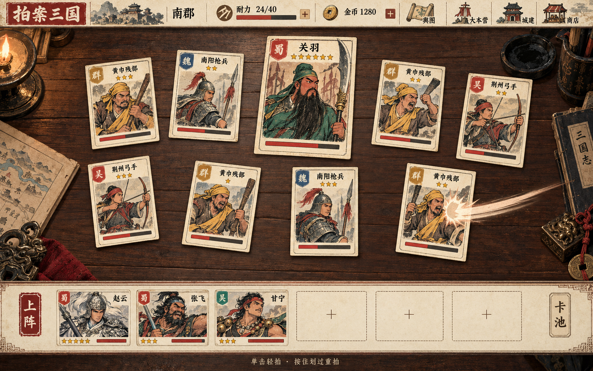

《拍案三国》图片基准完整策划案
让三国成为桌上一叠有分量、能拍翻、能收藏的旧纸牌。
版本：目标版 v1.3 · 完整设计稿 1.0
日期：2026-10-04
项目：拍案三国 · Godot 桌面游戏
设计基准：用户提供的怀旧印刷牌桌图片，1586 × 992
文档状态：本次交付为策划案；以下目标设计尚未据此改造游戏。

01｜方案总览
1.1 一句话定位
一款三国题材的鼠标拍卡成长游戏：玩家在旧木桌上拍翻敌牌，以有限耐力换取金币，回营配置武将、装备与士卒，推进荆州舆图，经营打下的城池，最终挑战关羽主将桌。
1.2 本版的四个核心决定
- 主视觉采用怀旧连环画印刷。 旧木桌、米白纸牌、墨线人物、矿物色、朱印、金星构成统一语言。以附件中的画面为准，所有页面延续同一材质与构图逻辑。
- 人物成为卡面的主体。 敌牌用完整竖幅插画，上阵用横幅人物裁切；姓名、阵营、星级与血量仍由界面绘制。
- 保留当前多局成长骨架。 轻拍、重拍、耐力结算、技能树、每将装备与带兵、城建挂机继续构成主循环；本版补齐引导、规则说明和一致性问题。
- 把参考图变成可运行的真实场景。 普通关卡支持 3—15 张敌牌，终章提供关羽主将构图。图片中的九张敌牌、六个上阵框、24/40 耐力和 1280 金币是构图示例，不作为统一关卡数值。
1.3 面向的体验与玩家
面向喜欢三国人物、实体卡牌收藏、鼠标点击成长与轻量经营的玩家。单次出征以 30—120 秒为初调目标，单次游玩以 10—20 分钟形成一个成长段落；这些是后续试玩目标，当前尚无用户实测数据。
玩家应能迅速回答四个问题：我现在拍哪张、还能拍几次、这趟带回什么、下一笔金币花在哪里。美术需要让人愿意看人物，信息需要让人能迅速做决定。
1.4 文档中的三类信息
| 标识 | 含义 | 使用方式 |
|---|---|---|
| 现状 | 已核对当前数据或代码的规则 | 作为兼容与回归基线 |
| 目标 | 本方案建议落实的正式设计 | 后续按里程碑实施和验收 |
| 试玩目标 | 节奏、耗时、帧率、满意度的目标值 | 经试玩或性能测试确认，不写成已达成 |
本案覆盖玩法、内容、经济、页面、视觉、动效、声音、数据、制作与验收。完整卡池仍为 169 张、区域为 21 个、路线为 4 条、卡包为 9 种；新增内容重点是终章主将战与表现资产。
02｜参考图片解析与设计原则
2.1 从图片中提取的视觉结构
| 元素 | 图片中的特征 | 正式设计要求 |
|---|---|---|
| 顶栏 | 米白纸、红色标题印、郡名、耐力、金币、四个插画入口 | 保留横向节奏；城市与郡名分层显示，关键资源始终可见 |
| 牌桌 | 深棕旧木、细横纹、边角摆放蜡烛和文房道具 | 中央保持安静，四边形成场景；道具不能挡牌或捕获点击 |
| 敌牌 | 旧纸双边框、阵营旗、金星、人物大图、短红血条 | 插画占据主要面积；文字不烘焙进插画；转动后仍完整可读 |
| 中央主牌 | 关羽更大、更靠上，绿色衣袍与长刀形成轮廓 | 主将尺寸与位置有层级；关底身份由真实数据决定 |
| 上阵条 | 横向赵云、张飞、甘宁人物卡，三个虚线空位 | 六个可视携带框；未解锁框与空框区分；主角另有固定标识 |
| 入口图标 | 舆图卷轴、大本营军帐、城建城门、商店屋舍 | 四个有插画的主导航，文字作辅助；不用小字挤成一排入口 |
| 拍击反馈 | 局部暖色冲击、短弧线、纸牌受力 | 连续划过逐张反馈，保留纸牌和墨印质感 |
| 环境细节 | 旧地图、三国志、印玺、红绳、墨碗 | 承担氛围和方向引导，不承担数值信息 |
2.2 五条不可让步的美术标准
- 在主桌面中，人物、纸牌与桌子的层次必须一眼分开。
- 普通敌牌插画区约占卡面高度 65%—72%；脸部不能缩成头像小方块。
- 卡面只放姓名、阵营、星级、血量；战力和长技能放在详情或上阵信息中。
- 稀有度主要由星数、边角纹样和揭示节奏表达；所有卡牌仍使用统一纸底。
- 旧纸纹理服务质感，磨损避开小字、眼睛、星级与血条；中央桌纹不能抢人物。
2.3 图示数据与正式数据的差异
| 图片示意 | 当前工程事实 | 目标处理 |
|---|---|---|
| 耐力 24/40、金币 1280 | 初始基础耐力为 6；金币和上限由成长决定 | 界面实时读取，策划图可用示意值但标明 |
| 赵云五星、张飞三星、甘宁三星 | 赵云六星、张飞六星、甘宁五星 | 使用正式卡池星级，维持角色身份 |
| 南阳枪兵标魏、荆州弓手标吴 | 两张卡在现有数据中均属新野、起点 | 阵营印按数据；图示误差不覆盖数据 |
| 六框中后三框可直接加人 | 初始携带位 3，升级后最多 6 | 初始后三框显示锁印和解锁来源；已解锁空框才显示加号 |
| 友军卡底部像血条 | 现系统友军没有受击生命值 | 改为静态朱红战力铭牌，标注“战力”；不用假血量 |
| 关羽位于南郡桌中央 | 关羽 G28 已在卡池，尚未进入现有敌人列表 | 作为本案终章内容项独立实现，不能仅替换图像冒充关羽战 |
| 桌面九张敌牌 | 当前区域敌牌数 3—15；新野 6、江陵 15 | 九牌构图为中期标准，满桌另有适配规范 |
2.4 相对现版的主要改造
现有版本已有全卡插画与统一纸面风格。本案要求进一步调整视觉结构：把卡内局部人物图改为竖幅完整画面，把底部小型竖卡改为六框横卡，把文字导航改为插画导航，增加名将中心构图、纸张边缘和分层桌面道具，并将所有二级页面的布局与操作说明统一。
03｜题材、叙事与内容语气
3.1 世界包装
玩家以“新野之主”起步，案上铺开的纸牌代表荆州各地的守军、名将与城池。一次拍桌就是一次出征，一次收桌就是一次整备。舆图记录征程，营帐整理军力，城建记录经营，卡铺补充收藏。
叙事采用短章回与战报，不打断核心拍击。历史人物保留标志性服装、兵器和性格；游戏已有阵营归属与特殊人物以项目数据为准。雷飞、青梅竹马等现有特殊条目保留，使用同一插画语言和独立“客”字印。
3.2 五个体验段落
| 阶段 | 地点与主题 | 体验重点 | 叙事载体 |
|---|---|---|---|
| 序章 | 新野起兵 | 学拍卡、第一次收成、第一次升级 | 一页短引导与战报 |
| 北线 | 南阳、襄阳 | 拍力与耐力成长，理解整备 | 魏系兵牌与城门 |
| 分路 | 当阳、夏口、武陵 | 挑选流派，获得关键武将 | 舆图路径与短章节题签 |
| 南进 | 长沙、桂阳、零陵 | 装备、带兵与城建形成组合 | 队伍卷轴、城池经营 |
| 终章 | 江陵、南郡 | 完整队伍挑战关羽，收齐征程 | 关羽主牌、终章战报与收藏进度 |
3.3 文案原则
操作说明用现代简明中文，氛围用短题签。入口固定命名“舆图 / 大本营 / 城建 / 商店 / 卡池 / 图鉴”，收益单位固定为“金币”和“金币/小时”，战斗资源统一叫“耐力”。
建议文案：“拍翻敌牌，带回收成。”；“耐力用尽，本趟收桌。”；“已解锁空位：拖入将兵上阵。”；“该城已克服，可前往城建经营。”。不要用“拍翻即归你”概括现有掉落，因为当前击倒主要给金币，武将需要清桌后招降。
04｜核心循环与玩家目标
4.1 三层循环
| 层次 | 行为循环 | 获得的反馈 | 玩家要做的决定 |
|---|---|---|---|
| 秒级 | 选牌 → 轻拍/重拍 → 扣耐力 → 扣敌方血量 | 手牌受力、墨印、伤害、金币 | 单点收尾，还是划过多张 |
| 分钟级 | 出征 → 耗尽或清桌 → 战报 → 升级/换阵 → 再出征 | 轻拍值提高、更多耐力、新路径 | 当前投入拍力、耐力还是队伍 |
| 长期 | 招降/开包 → 装备与带兵 → 克服区域 → 城建产出 → 收集 | 新人物、新插画、新城池与成长组合 | 选择路线和常用队伍 |
4.2 局内与局外边界
现有规则继续保留：未克服关卡每次出征恢复全部敌牌血量；金币、收藏、升级、装备归属、带兵、区域状态和城建成长保留。耐力耗尽或主动撤退都结算，清桌给首通奖励和可招降武将。
已克服区域成为经营地基，不再重复刷敌牌。舆图中点击已克服城池，首要动作是“前往城建”；不能展示仍可出征的按钮。
4.3 成功、受挫与终局
小成功是拍翻一张牌或买下一次升级，中成功是清空一桌并解锁下个区域，大成功是养成一支明确流派的队伍。未清桌的战报仍强调带回的金币和下一次改善方向。
终局目标为克服江陵、完成关羽主将战及全部 20 个非起点区域。终章结束后展示征程、队伍与图鉴完成度，玩家可继续经营和收集。新周目在菜单中明确说明将覆盖当前成长，本案沿用现有重开逻辑，不增加未定义的转生货币。
05｜开局、教学与节奏
5.1 首次进入流程
| 阶段 | 引导内容 | 玩家操作 | 完成条件 |
|---|---|---|---|
| 进入牌桌 | “桌上都是敌牌。单击轻拍，消耗 1 耐力。” | 轻拍一次 | 实际命中一张存活敌牌 |
| 第一次重拍 | “按住划过多张牌。每张 2 耐力，伤害 ×2.5。” | 划过两张 | 两张分别命中；剩余耐力不够时允许稍后再学 |
| 第一次收桌 | 战报列击倒、伤害、击倒金币、额外收成 | 阅读并进营 | 结算已入账，动作不重复给钱 |
| 第一次升级 | 显示当前伤害和购买后预览 | 购买耐力或拍力 | 预览与实际升级一致 |
| 第一次换阵 | 只展示可上阵将兵和一个空位 | 点击上阵或拖入 | 新阵容正确生效 |
| 首通新野 | “新路径已开。” | 选择樊城或中庐 | 进入真实可挑战区域 |
| 解锁城建 | “再克服 3 处非起点区域，开放城建。” | 获城池并放建筑 | 新野及已克服区域的城池一并补发 |
引导是可跳过的纸质小提示，每次只出现一个操作。新手期间不要求阅读长规则，不锁住非必要入口，不引导玩家打开尚未解锁的带兵或装备功能。
若首趟金币不足以购买任一升级，显示最低有效升级的差额与“再出征”，下一次余额足够时再触发购买教学；不把首趟必能升级当作已验证事实，也不未经数值定义赠送额外成长。
5.2 前五分钟的试玩目标
0—30 秒理解轻拍；30—90 秒完成一次收桌和升级；1—3 分钟理解“本趟带回金币”；3—5 分钟尝试不同升级或更换将兵。首通新野的确切耗时需基于实际耐力、单击速度与重复卡情况测量，不能从 60 点关卡血量直接推算。
如果出现反复 3 趟都买不起任何有效成长、玩家不知道如何继续或一次升级后连推多桌，应先检查收益与升级曲线，再决定是否调参。目标是形成小幅、连续可感知的改善。
5.3 中后期解锁节奏
前期先讲拍击和全局成长；拥有可用武将时展示练级；装备槽首次解锁时讲五部位；获得带兵技能后讲麾下士卒；城建开放时讲在线和离线产出；临近江陵再讲终章门槛。任何入口解锁都伴随一个可立即执行的小任务。
06｜拍击、耐力与战斗规则
6.1 核心操作
| 操作 | 规则 | 适用场景 | 界面表现 |
|---|---|---|---|
| 轻拍 | 单击，基础伤害 ×1，消耗 1 耐力 | 低血收尾、精确选牌 | 小范围下压、短墨印 |
| 重拍 | 按住划过，每张基础伤害 ×2.5，每张消耗 2 耐力 | 多张敌牌、提高耐力效率 | 短轨迹、逐张冲击与大墨印 |
| 暴击 | 普通触发伤害 ×2；蜀系六张羁绊后 ×4 | 爆发队伍 | “暴击”短印与更强回弹 |
| 拍案 | 连击达到门槛，本次伤害基础 ×5；吴系六张后 ×7 | 连击队伍 | “拍案”朱印、短停顿 |
| 拍翻 | 敌牌血量归零 | 完成击倒 | 正面转背面，再收束到战报方向 |
| 清桌 | 所有真实敌牌被击倒 | 克服区域 | 首通印、奖励纸条、舆图 |
现有判定中，拍案优先于暴击，同一次拍击不叠加两种倍率。重拍增加的连击为轻拍的两倍。默认连击门槛 20，卡牌被动、装备与羁绊可修改；连击保护影响触发后的保留值。本案保持这些关系。
6.2 输入与防误触
拖拽从空白桌面起手也能重拍，同一手势每张敌牌最多命中一次。正式版使用牌面的真实变换范围判定，旋转、放大和视窗变化后仍准确。轨迹穿过上下两张牌不能漏判。
目标修正：当剩余耐力为 1 时，重拍不触发，提示“重拍需要 2 耐力，可单击轻拍”；不自动改成轻拍，也不扣成负数。当前核心判定只检查耐力大于 0，需要作为规则修正落实。
空拍不消耗耐力；已翻牌不再受击；点击上阵条、道具、提示、血条说明和其他窗口不触发拍卡。鼠标按下至释放归属于起始操作区域，避免拖卡经过桌面时触发重拍。
6.3 伤害结构与展示
现有轻拍伤害为“1 + 卡组战力”，再应用点击伤害修正；卡组战力由主角底子、上阵将兵、上阵武将麾下士卒和现有倍率逻辑计算。主角运行时底子为 0.3，不直接读取卡池中的 1.0，避免与基础拍力重复计算。
拍力升级为 ×1.15 的复利成长；武将百分比被动、装备、功能建筑和羁绊按现有程序的顺序计算，不凭卡面文案重新实现一套公式。战力详情需列出“基础、武将、士卒、装备/被动、全局成长、最终轻拍/重拍”，由实际结果生成。
6.4 血量、伤害与奖励记账
敌牌血条始终显示实际剩余比例，当前/最大生命值在悬停或精确数值模式显示。战报区分“击倒时已入账”和“收桌追加”，防止玩家误以为两笔是同一奖励。
现状：伤害累积包含超出敌方剩余血量的部分，未清桌收成按此值折算。本版视觉迭代先保留该收益基础；在后续平衡实验中比较按有效伤害计算的方案。不得悄悄改变公式导致老玩家收益下降。
6.5 战斗中的其他窗口
打开舆图、大本营、城建、商店和卡池时，底层停止响应拍击，连击不因读界面自动掉失。关闭后回原桌；切换到其他未克服区域前，明确提示将结算当前出征、下次恢复满血。返回封面与退出按实际存档规则处理。
目标统一规则：战斗中允许调整上阵，伤害即时更新；本趟最大耐力在开战时锁定，耐力和上限类升级于下一趟生效，不可通过换装或切换将兵反复补满耐力。界面在购买和换装预览中写明“下趟生效”。
07｜卡牌体系、上阵与收藏
7.1 内容规模
| 类别 | 数量 | 用途 | 插画重点 |
|---|---|---|---|
| 初始武将 | 1 | 新野之主固定存在，不占携带位 | 主公身份与统一主角标记 |
| 武将 | 57 | 上阵、被动、练级、装备、带兵、招降 | 脸、甲胄、武器、姿态与故事识别物 |
| 士兵 | 24 | 独立上阵、武将麾下、部分合成素材 | 兵种轮廓先于阵营配色 |
| 装备 | 36 | 五部位属性与被动 | 可辨的物件轮廓和材质 |
| 城池 | 21 | 克服后提供建设地基与槽位 | 河港、城墙、山地与建筑群 |
| 建筑 | 30 | 放置后产出或提供功能 | 功能设施、屋顶与占地形态 |
| 合计 | 169 | 保留原有 ID 与所有条目 | 全量目录见附录 A |
当前六档星级数量：一星 15、二星 22、三星 42、四星 38、五星 31、六星 21。星级表示收藏与强度层次，阵营表示归属，卡牌类型表示用途，三者不能用同一种颜色或图形互相替代。
7.2 上阵规则
可携带将兵初始 3，最多 6；新野之主固定存在且不占位。独立上阵的士兵按完整自身战力计算，士兵不能装备物品。库存中的卡只有上阵或绑定到上阵武将后才对当前战力有贡献。
现有系统以卡牌 ID 聚合拥有数量，同一 ID 不重复占据多个上阵框。重复卡在图鉴、卡池和合成界面显示数量，不凭数量生成多个可同时出战的分身。若未来改为实例化卡牌，需要独立设计实例 ID、等级与归属迁移。
7.3 上阵操作
卡池提供点击上阵与拖拽上阵两种方式。拖到空框放入、拖到已有卡框替换、拖动已有上阵卡到目标框调整顺序；点击已上阵卡可看详情，并提供明确的卸下动作。操作确认后显示轻拍伤害变化和羁绊进度，不弹常规确认框。
已解锁空框是虚线纸框与加号；锁框是浅灰纸底、锁印和“携带位解锁”；上阵框是人物卡。主角标识放在“上阵”竖印旁的固定小印/展开详情中，避免六框变成七张横卡。
7.4 获得与去向
| 来源 | 正式行为 | 必须告知玩家 |
|---|---|---|
| 初始卡包 | 五张一星士兵，自动上阵符合条件的卡 | 起步队伍与重复数量 |
| 击倒敌牌 | 立即获得击倒金币 | 不把动画飞入误解为所有敌牌自动入库 |
| 首通区域 | 可俘获武将进入招降列表 | 需要金币招降；城池按城建门槛发放 |
| 购买卡包 | 一次获得五张卡，包含将兵、装备、建筑 | 花费、卡池范围、星级范围与保底进度 |
| 合成 | 消耗选定素材，得到高一星卡 | 预览素材和结果范围；使用中卡必须保护 |
| 城池补发 | 达到城建门槛后补齐已克服城池 | 不漏发新野，不重复发同一城池 |
图鉴支持类型、阵营、星级、已拥有与搜索筛选；未拥有卡也可看剪影或浅印插画和明确的获得方式。收藏完成度按不同 ID 计数，重复数量独立显示。
08｜技能树、武将、装备与带兵
8.1 技能树现有数值基线
| 层级 | 技能 | 初始 → 上限/成长 | 首级金币 | 后续费用倍率 | 前置 |
|---|---|---|---|---|---|
| 立身 | 耐力 | 6；每级 +1，最多 60 级，基础上限 66 | 12 | ×1.15 | 无 |
| 立身 | 拍力 | ×1.15/级，无等级上限 | 18 | ×1.16 | 无 |
| 立身 | 携带位 | 3 → 6，共 3 级 | 300 | ×2 | 无 |
| 扬名 | 暴击 | +4%/级，共 8 级 | 60 | ×1.4 | 拍力一级 |
| 扬名 | 财路 | +20%掉金/级，共 10 级 | 40 | ×1.35 | 携带位一级 |
| 扬名 | 装备槽 | 0 → 5，共 5 级 | 150 | ×1.6 | 拍力一级 |
| 成军 | 挂机效率 | +5%/级与离线上限 +1 小时/级，共 10 级 | 80 | ×1.4 | 财路一级 |
| 成军 | 武将带兵 | 每将 0 → 3 兵位，共 3 级 | 600 | ×2 | 携带位、装备槽各一级 |
树的前置只要求点亮一级。每个节点同时显示当前等级、下级提升、费用、可购买/金币不足/前置未达/已满状态。数值来自同一计算函数；升级预览必须考虑当前阵容与倍率，不能简单把最终伤害乘 1.15。
8.2 武将练级
武将每级提高自身基础战力 8%，采用基础 ×（1 + 0.08 × 等级），不是逐级复利。二至六星等级上限分别为 5/10/15/20/25；首级金币分别为 20/60/200/800/3000，后续 ×1.35。主角固定底子遵循专有规则。
养成详情显示人物大图、等级、当前自身战力、下级战力、费用、被动、装备和士卒。不得把武将自身 +8% 写成全队 +8%。
8.3 每将装备
依次开放兵器、铠甲、坐骑、兵书、宝物五个部位。现有 36 件装备分为兵器 12、铠甲 7、坐骑 7、兵书 6、宝物 4。每个武将独立拥有五部位配置，一件装备 ID 当前只绑定一个武将，转移时展示原主人。
已卸下武将保留配置；配置只有该武将上阵时参与战斗。士兵无装备槽。装备来源为卡包与合成，不进入敌人桌。详情卡明确区分“未解锁、已解锁未装备、已装备、绑定其他武将”。
8.4 武将带兵
点亮带兵后，每个上阵武将开放 1—3 兵位，麾下士卒战力全额计入且不占携带位。被绑定士兵不再独立上阵，卡池不把其显示为可随便拖入的待命卡。
上阵横卡只展示“装 2 / 兵 1”等短标记，完整配置在大本营展开。当前路线羁绊只统计独立上阵的将兵，不统计麾下士卒；界面需要明确说明，避免玩家误以为挂三个魏兵就能激活羁绊。
09｜荆州舆图、路线与终章
9.1 区域推进
保留现有 21 个区域、真实节点关联与地理坐标。路线是舆图分支与配队倾向，玩家可混编和跨线推进，不增加开局不可逆的阵营选择。
新野为真正第一关，6 张敌牌、总生命 60。清新野后开放樊城和中庐。江陵的实际门槛为夷陵、公安、泉陵全部克服；地图中的连线不能替代门槛校验，特别不能因为当阳连向江陵就提前放行。
9.2 四线特征与羁绊
| 路线 | 队伍方向 | 3 张上阵羁绊 | 6 张上阵羁绊 | 图形标志 |
|---|---|---|---|---|
| 魏 | 稳定拍力、耐力 | 拍力倍率中增加 10% | 再增加 15%，耐力上限 +10% | 靛蓝旗、魏字、方印 |
| 蜀 | 暴击、终结爆发 | 暴击率 +10% | 暴击倍率由 ×2 到 ×4，拍案门槛降低 3 | 朱红旗、蜀字、刀纹 |
| 吴 | 连击、拍案 | 每次轻拍连击累计额外 +3 | 拍案基础倍率由 ×5 到 ×7 | 青绿旗、吴字、水纹 |
| 群雄 | 经营、离线积累 | 建筑产出倍率增加 20% | 再增加建筑产出 10%，离线上限 ×1.5，仍封顶 24 小时 | 赭黄旗、群字、聚义纹 |
群雄线卡面描述中的“金币产出、离线收益”需要拆成具体作用项；当前实际主要通过建筑产出与离线上限实现，不标成所有战斗金币都增加 20%。路线表中的敌方生命倍率 1.2/1.0/0.85/1.05 未被当前战斗刷新使用，目标版先沿用区域总血量，不重复叠乘。
亲和度来自克服该路线区域：3 点招降费用减少 15%，5 点该线城池槽位 +1，7 点专属建筑解锁。当前魏/蜀/吴/群雄分别只有 5/4/5/6 个区域，按现有来源均无法达到 7 点；目标版补充“该线累计收集 3、6、10 个不同将兵/装备/建筑 ID 时各 +1，最多 +3”。不计城池、重复数量或上阵次数，只在首次完成时授予；各线因此都能达到 7 点。专属建筑解锁需接入实际获取池，不能只显示提示。
累计收集采用永久“已发现 ID”集合，获得后即登记，合成或拆除不会让里程碑失效；俘获但尚未招降不计入。旧档以当前库存和已放置建筑初始化，未记录的历史消耗不虚构补发。专属建筑在亲和 7 之前从目标获取池排除，达到门槛后纳入对应获取入口，并以真实可获得结果校验。
9.3 终章关羽主将桌：目标规则
这是独立内容调整，随 P1 规则与内容阶段实施。当前江陵为 15 张敌牌、总生命 15,700,000，主关底是城池卡江陵，关羽和张飞未在当前敌人列表中。参考图的“关羽中心主牌”需要真实关卡定义支持。
目标阵容保持 15 张与总生命基线：以关羽 G28 替换江陵城池敌牌，继承原关底生命 4,710,000 与关底标记；张飞 G26 替换一张重复王甫，继承其生命 1,332,121；其余 13 张先保持原血量。江陵城池卡继续作为首通城建奖励发放。若试玩显示队伍难度或收益失衡，再在独立平衡表调整。
关羽血量 100%—66%、66%—33%、33%—0 三段使用不同题签、人物姿态、局部印色和音效。这一版三段属于表现阶段：不回血、不额外生成敌牌、不增加攻击惩罚，玩家的拍卡判定与整桌总生命不变。以同一人物和兵器为基础制作三张姿态，避免变身成为另一角色。
替换人物会改变卡牌掉金系数与俘获结果，必须将关底掉金从人物默认系数分离，按原槽位奖励预算计算，不能直接继承关羽 8.0 系数导致收益放大。清桌后按可俘获规则把关羽、张飞加入招降；未清桌不提前入库。结算展示“江陵已克服 / 关羽可招降 / 城池到账”。
9.4 舆图状态
未解锁为浅墨锁印；可挑战为城门图与路线印；当前区域有朱圈；已克服为盖章加对勾。状态同时使用形状和文字，避免依靠颜色。右侧详情显示本城敌牌数、总生命、门槛、首通奖励、潜在招降和城建槽位；未解锁可预览，出征按钮禁用并列出缺少条件。
10｜金币、奖励、卡包与合成
10.1 货币与收支
本版只使用现有金币，不加入付费钻石。顶部金币旁加号打开商店或收益说明，耐力旁加号打开大本营耐力技能；两者都不是现金充值入口，也不在战斗中直接补满资源。
| 产出 | 当前基线 | 目标说明方式 |
|---|---|---|
| 击倒金币 | 单牌最大生命 ×0.6×该牌掉金系数×财路倍率，最低 1 | 逐次入账，战报单独列累计 |
| 未清桌收成 | 取整（本趟累计伤害 ×0.5）+5 | 收桌时追加；保留超额伤害计入基线 |
| 首通奖励 | 区域总生命 ×0.8×财路倍率后取整 | 清桌追加；与未清桌收成互斥 |
| 城建在线 | 当前建筑每小时产出折算时间 | 显示总金币/小时和来源 |
| 城建离线 | 产出×有效离线时长×效率 | 明列时长上限、效率与本次金额 |
主要金币去向依次为技能树、武将等级、装备与卡包、招降、合成、建筑强化。费用预览始终显示购买后的实际结果和余额；金币不足按钮显示原因而不是静默无响应。
10.2 九种卡包
| 卡包 | 基础价格 | 普通常规星级 | 目标保底周期与下限 | 现有解锁依据 |
|---|---|---|---|---|
| 通用基础包 | 50 | 1—3 | 每 10 包至少一张三星 | 开局可用 |
| 宛城卡包 | 200 | 1—5 | 每 8 包至少一张三星 | 南阳郡任一区域克服 |
| 襄阳卡包 | 1000 | 1—4 | 每 8 包至少一张四星 | 襄阳郡任一区域克服 |
| 南郡卡包 | 5000 | 1—4 | 每 8 包至少一张四星 | 南郡任一区域克服 |
| 江夏卡包 | 2500 | 1—4 | 每 8 包至少一张四星 | 江夏郡任一区域克服 |
| 长沙卡包 | 20000 | 1—4 | 每 8 包至少一张五星 | 长沙郡任一区域克服 |
| 武陵卡包 | 8000 | 1—4 | 每 8 包至少一张四星 | 武陵郡任一区域克服 |
| 桂阳卡包 | 60000 | 1—4 | 每 8 包至少一张五星 | 桂阳郡任一区域克服 |
| 零陵卡包 | 180000 | 1—4 | 每 8 包至少一张六星 | 零陵郡任一区域克服 |
每包五张。实际价格为基础价 ×2.4 的已购次数幂，再应用折扣并取整；前三次无折扣通用包价格示例为 50、120、288。商店必须显示本次价格与下次价格，不一直展示基础价格。
现状差异：当前执行的是跨包累计每 10 包尝试抽取四星，通用包没有四星候选，因此可能无法兑现；部分数据文案要求五星/六星，但普通常规池最高四星；部分解锁文案列指定城市，程序实际按郡开放。
目标统一：保留按郡解锁，修改商店说明；按上表为每种包建立独立计数与保底池。保底池可高于普通常规最高星级，仍遵守阵营/通用条目范围。固定周期第 N 包至少满足下限，自然出高星不重置周期；若本包已有达标卡不替换，否则替换最后一张。计数、池范围和命中结果同时存档，保存后才播放翻牌，跳过和重启不会重复发奖。
普通抽取现有单条权重为 7−星级，各条概率为自身权重除以池内权重总和；同星概率需汇总该星所有候选，并非仅按六档权重直接计算。目标商店增加可展开的星级概率与候选范围，按实际卡池生成；保底池另算并明确展示，不编写未经核对的固定百分比。
10.3 招降
现有三星至六星基础招降费用为 200 / 800 / 3200 / 12800，按亲和与功能建筑折扣修正。列表每张展示大肖像、被动摘要、战力、费用和获得关卡；招降后进入库存，提供“查看 / 上阵”动作，不能未经提示替换已有阵容。
10.4 合成与素材保护
一般合成：三张同星将兵、装备或建筑加金币，随机得到高一星的可合成卡；基础费用一至五星为 10/40/160/640/2560。专门建筑合成只吃同星建筑，费用为对应一般合成的 ×1.5。六星不能继续合成，主角与城池不可作为素材。
目标新增保护：上阵、已绑定装备、带兵、已放置建筑和玩家锁定收藏均默认不可作为素材。当前一般合成会直接从拥有数量中取前三张，可能影响在用卡，必须先改为“可用数量”并提供三张素材预览。合成一次明确消耗三份数量；界面禁止多次提交；结果动画之前完成入库与保存。
目标版不承诺定向合成。界面列出候选类型和星级，随机结果明确标注，避免让玩家误以为三张武将必出更高星武将。
11｜城池、建筑与离线经营
11.1 解锁与放置
克服三个非起点区域后开放城建，并补发所有已克服区域的城池卡，包括新野。城池本身仅提供地基与槽位，放入产出建筑才获得收益，功能建筑提供相应属性。
城池基础槽位由区域表确定，范围 1—8，亲和达 5 后对应路线再 +1。仓库中的建筑与已放置建筑必须分开计算数量，重复同一建筑可否放置按其唯一性字段校验。
11.2 建筑成长
建筑当前最高 Lv.10，产出为基础 ×（1+0.15×等级）；强化首级费用为 120×1.6 的（星级−1）次方，再按已强化等级 ×1.45 成长并取整。Lv.0 菜地基础产出 5 金币/小时，Lv.1 为 5.75；这是产出示例，不是新数值。
点击槽位打开详情：图、等级、基础产出、加成、下级产出、强化费用和拆除动作。拆除归还建筑卡但丢失该位置强化等级，执行前显示具体损失并要求一次确认；普通放置和升级不增加确认流程。
11.3 在线与离线
基础离线效率 50%，挂机效率技能每级 +5%，并叠加上阵相关词条，最高 100%；基础离线上限 8 小时，每级技能 +1 小时，功能建筑和群雄六张羁绊可修改，总上限 24 小时。
回归账本显示实际离开时长、计入时长、上限、效率、总收益。时间回拨按零时长处理，超长时间按上限截断，已结算时间戳立即更新；加载后不得通过连续开关菜单反复领取。离线收益以实际放置建筑和保存的有效配置计算，不给空城假收益。
11.4 经营目标与界面引导
初次城建引导放入一张可用产出建筑，随后指出总产出变化。中期比较金币产出与功能建筑，后期优化槽位与高星建筑。城市图表现地貌与城门，建筑插画表现设施；本案采用固定槽位经营，不把界面包装成可自由摆放街道的城市模拟。
12｜页面结构与导航
12.1 页面清单
| 页面 | 主要任务 | 画面主体 | 主动作 | 返回关系 |
|---|---|---|---|---|
| 封面 | 开始、继续与新周目 | 标题朱印、纸牌和木桌 | 继续征程 / 开始 | 可进入设置与玩法说明 |
| 主牌桌 | 拍击、资源判断、查看阵容 | 敌牌与名将主牌 | 轻拍 / 重拍 | 常驻主导航和收桌 |
| 上阵卡池 | 找到待命将兵并上阵 | 横向人物卡与数量 | 上阵 / 拖入 | 抽屉收起回桌 |
| 大本营 | 技能树、练级、装备与带兵 | 技能纸页与将领卷轴 | 升级 / 再出征 | 回原桌或选择舆图 |
| 舆图 | 看门槛、选关、去城建 | 荆州纸质地图 | 出征 / 城建 | 回原桌 |
| 城建 | 放建筑、强化、看产出 | 城池大图与固定建设槽 | 放置 / 强化 | 回原桌或大本营 |
| 商店 | 买包、招降、合成、图鉴 | 纸质目录与卡包 | 各分页只保留一个主动作 | 回原桌 |
| 开包 | 展示已入库的五张卡 | 同款卡背与大卡正面 | 逐张揭示 / 一键揭示 | 返回来源分页 |
| 单卡详情 | 阅读规则与配置 | 大幅插画与清楚文字 | 依类型显示上阵等动作 | 回来源页 |
| 战报 | 理解本趟收益和下一步 | 战报纸、金币与收集摘要 | 整备 / 选下一站 | 进入对应主页面 |
| 设置/说明 | 音量、可读性、操作说明 | 干净纸页 | 应用 / 返回 | 回来源页 |
| 终章结果 | 记录通关与收集进度 | 江陵朱印、主将和征程册 | 继续经营 / 查看图鉴 | 大本营或图鉴 |
12.2 导航层级
顶部四个主入口为舆图、大本营、城建、商店；底部卡池独立入口。商店内分页统一为“卡包 / 招降 / 合成 / 建筑 / 路线 / 图鉴”，建筑分页购买和合成，城建主页面负责实际放置与经营。
收桌撤退、设置、返回封面属于次要入口，置于当前区域旁的折叠菜单，不挤进四个主图标。高频行为保持一次点击可达；返回先关详情，再关抽屉，再回原桌，不丢当前筛选与选中项。
12.3 多窗口与状态一致性
主导航页同时最多一个；详情可叠在当前页；开包和战报为优先展示层。模态层打开后底层不响应鼠标。每页保留明确返回控件与键盘退出动作，关闭后恢复原视角、筛选和滚动位置。
13｜主牌桌与上阵条详细规格
13.1 布局基准
附件约为 16:10，本项目继续以 1280 × 800 为逻辑基准，兼顾 1280 × 720、1920 × 1080。以屏幕区域比例表达构图，实际像素在适配时按可读性限制调整。
| 区域 | 附件占比 | 1280 × 800 目标初值 | 功能 |
|---|---|---|---|
| 顶部纸栏 | 高约 7.5% | y=0—64，高 64 | 标题、郡/城、资源、四入口 |
| 木桌主体 | 高约 68.5% | y=64—616，高 552 | 所有敌牌、拍击与局部反馈 |
| 底部上阵纸栏 | 高约 19% | y=616—768，高 152 | 主公标记、六携带框、卡池 |
| 底部提示 | 高约 5% | y=768—800，高 32 | 拍法、连击进度、短提示 |
在 16:9 视窗中，顶栏、上阵栏和提示维持可读最小高度，桌面高度缩减并重新排牌；在更宽窗口中，背景扩展、牌桌安全区有最大宽度，避免人物被拉宽。
13.2 顶栏
左侧标题朱印宽约 160—180；区域标题约 120；耐力约 200；金币约 150；右侧四导航等宽，具体宽度自适应。1280 宽下先缩标题装饰与间距，不缩正文到不可读；低于基准宽度将次要信息归入折叠菜单。
耐力显示“当前/上限”与进度条，最后 2 点短暂朱红提示；金币显示当前余额，较大值采用一致的缩写并可查看精确值。顶部显示具体城市，郡名作为副题，例如“江陵 · 南郡”，不会把整个南郡误当成单一关卡。
四个导航插画均有 48—64 逻辑像素图形区域、明确文字和至少 44 × 44 的可点击区域；加号至少 28 × 28。禁用城建仍可点开门槛说明。
13.3 敌牌与主牌尺寸
普通敌牌目标高宽比为 1.38—1.45，基准宽 140—170，名将主牌为普通牌的 1.25—1.4 倍，详情大卡不受桌面尺寸限制。旋转普通牌约 ±3°—6°，主牌约 ±2°；每次铺桌可轻微变化，但布局种子稳定便于验证。
| 真实敌牌数 | 推荐摆放 | 基准卡宽目标 | 主牌处理 |
|---|---|---|---|
| 3—6 | 一排错落或两排疏排 | 165—190 | 有主将时居中；其他牌围绕 |
| 7—10 | 五列以内、两排错落 | 140—165 | 第一排中央，约 1.3 倍 |
| 11—15 | 五列、三排，或按安全区计算六列 | 100—120 | 使用跨格主牌，必要时主牌倍率降为 1.15 |
所有卡必须同屏，不新增波次来绕开满桌问题。先给主牌预留矩形，再为其余卡计算空位；旋转后的包围盒不能重叠、越界或进入上阵栏。满桌先缩短无关装饰与名将放大比例，姓名不低于 14 逻辑像素；若布局不可满足，调整行列与牌桌安全区，不把卡叠在一起。
牌桌主体中间约 80% 宽是优先摆牌区，边缘道具占地另标不可用遮挡区；场景可装饰区与可点击区分开。相邻旋转后的纸牌至少留 10—14 像素可见间隙。
13.4 敌牌面内比例
上缘姓名与阵营约 11%—13%，星级约 7%，插画约 65%—72%，底部血量约 10%—12%。阵营旗位于左上，姓名对齐至其右，星级紧靠姓名下方；兵器可以接近插画边界，但不穿过动态姓名和血条。
卡面不再重复一行“武将 · 蜀”占空间，类型由插画和详情说明。精确数值模式在血条下或侧内显示生命数字；普通模式只显示比例和悬停详情。主关底显示短角签，具体是否关底取自战斗数据。
13.5 横向上阵卡
六个携带框使用约 1.45—1.65 的横向比例，在 1280 宽下目标约 155 × 105，头像和半身构图占大部分背景。右上姓名、左上阵营、左下星级、右下朱红战力铭牌；边缘可带等级与“装/兵”短标记。
六框之间保持 10—16 像素间隔；左侧上阵竖印和主公小印共约 72 宽，右侧卡池竖签约 64 宽，其余给卡槽与留白。锁定与空位使用同一框尺寸，不能在升级后突然把整条大幅挤压。
友军战力铭牌是静态数据标签，写“战力 625”或明确缩写；没有随拍击扣减的生命值。鼠标悬停显示当前自身战力、装备、士卒与被动摘要。
13.6 卡池抽屉
由底部向上展开的纸质抽屉约占屏高 25%—32%，支持横向滚动或分页、阵营筛选、战力排序、名称搜索与数量显示。仅待命可上阵将兵显示直接上阵动作；已上阵、已绑定士卒、未拥有条目分状态处理。
展开时重排桌面至剩余安全区并屏蔽拍击，避免抽屉盖住仍能操作的敌牌；关闭复原。拖拽卡离开抽屉后使用清楚的纸牌预览与目标框朱边，不让拖拽图、文字或特效拦截鼠标。
14｜各二级页面的完整设计
14.1 封面
深木桌中央铺收藏目录纸，左上拍案三国朱印，三个代表人物卡形成主视觉，四周少量文房道具。主按钮为“继续征程”，无存档时为“开始征程”；次按钮为“新周目、玩法说明、设置、退出”。存档摘要显示最近城市、金币、已克服区域与上阵队伍。
新周目确认写清将清空的成长，不使用含糊的“是否确认”。缺失或损坏存档给出可理解的说明与恢复/开始入口，不进入空白牌桌。
14.2 大本营
三栏初值为 34% / 26% / 40%。左栏技能树使用三张竖向题签和连线；中栏最近战报、当前轻拍/重拍、推荐可挑战区域与“再出征”；右栏将领册，点击展开人物大卡、等级、五部位与兵位。
右侧一次只展开一个武将，收起时保留肖像与关键配置，减少长页。点击装备槽出现对应部位目录；带兵出现未绑定士兵目录；转移操作说明来源和变化。升级成功在节点局部盖短印，不重建整个页面导致滚动跳回顶部。
14.3 舆图
中央约 60% 是旧纸地图与真实节点，左侧征程/路线筛选，右侧选中城池大图与详情。山川与河道为淡墨，线路、节点、城名优先可读。节点密集处采用标签避让和辅助引线，选中节点描边与短印。
输入支持点击节点，滚轮只用于必要的地图缩放或目录滚动；在基准视窗应能看到全图轮廓。地图装饰不替代真实解锁逻辑，江陵详情逐项列出三项门槛。
14.4 城建
三栏约 22% / 52% / 26%。左栏城池列表含城门缩图、名称、已用/总槽位、金币/小时，支持仅看有建筑；中栏所选城池大图与可操作建筑槽；右栏仓库、总产出与建筑合成入口。
空槽写“放置建筑”，已占槽展示插画、等级和产出；功能建筑用“功能”短签说明作用。强化详情提供前后对比。收益总览可展开到每城、每建筑，不以大段文字替代图形槽位。
14.5 商店与各分页
卡包分页采用插画纸包，显示真实当前价格、下次价格、每包五张、范围、保底进度和门槛。招降分页以武将纸卡和费用为中心。合成分页以三素材纸框、金币费用和结果范围为中心。建筑分页显示独立物件图、唯一性与去城建操作。路线页显示羁绊和亲和来源；图鉴按类型提供完整目录。
每个分页具有空状态、金币不足、未解锁、处理中、操作成功/失败状态。购买一次只扣一次金币，窗口关闭或动画跳过不重新发奖。
14.6 单卡详情
左侧大插画，右侧姓名、星级、阵营、类型、用途、战力或产出、完整效果、来源与拥有/占用数量。装备增加部位和绑定主人；建筑增加唯一性与已放置位置；城池增加槽位和对应区域；武将增加等级与培养入口。
词条必须和实际效果一致。尚未实现的效果不能作为可用技能售卖，应改为明确的设计待接入条目并在制作列表中跟踪。
14.7 战报
纸页顶部题签“收桌整备”或“此城已克服”，中央三项为击倒、累计伤害、本趟总金币，下面展开已入账与新增奖励。可招降武将、获得城池与新路径各用图标和短行。
耐力耗尽主动作是“回营升级”，次动作“再试此城”；清桌主动作是“选下一站”，城建开放时附加“安排建设”。战报不会把收益动画与到账计算绑定，不存在看完才给钱的情况。
14.8 开包与高星展示
桌上先放五张统一卡背，逐张或一键翻开；星级越高，纸卡边角更精致、音效更完整。四星以上允许短特写，最高星占中心，其余向两侧退让；五星与六星用人物细节和朱金印表达，不长时间铺满屏幕闪光。
提供“全部揭示”和“完成”，最高星特写可跳过；全部揭示后的五张卡都能看详情与来源。不能为了凑五卡横排而在小窗口裁掉卡面。
14.9 设置与可读性
设置包括总音量、音乐、音效、数字显示、动效强度、屏幕微震、操作说明与返回。精确数字和减弱动效属于本版易用性目标；文字有清楚底色，键盘焦点有墨边标记。
主界面操作提示常驻“单击轻拍 · 按住划过重拍”，第一次教学另外显示消耗与倍率；长文案只在说明页出现。设置不在产品页面暴露引擎和资源制作流程。
15｜美术总纲：怀旧印刷连环画
15.1 视觉关键词
旧木案面、纤维纸、手工墨线、连环画着色、浅山水底、朱砂印、矿物绿、暗金星、纸边阴影。整体温暖但不泛黄，画面有年代感但人物神态清楚；一张卡应像值得拿起来看的一页小画。
桌面和场景道具可用较细致的材质，人物仍以有力墨线与有限平涂为主体；两者通过统一光向、纸影、色温和印刷颗粒融合。角色脸部、五官、衣甲与武器拥有明确线条，阴影用排线或少量网点。
15.2 目标色板
以下是设计用色，不是从参考图测量得到的精确取样值。后续在首张样卡和游戏视窗中校正。
| 用途 | 色值 | 使用限制 |
|---|---|---|
| 主纸底 | #F1E3C4 | 大部分卡面与纸栏 |
| 明亮纸面 | #F8EFD9 | 详情文字区，降低脏纹理 |
| 主墨色 | #292015 | 正文、墨线、数字 |
| 次文字 | #74634F | 帮助与说明，不承载关键资源 |
| 朱印 | #9D2F25 | 标题、主动作、选中 |
| 敌方血条 | #B8402F | 血量和耐力耗尽警示，配清楚标签 |
| 深木 | #3E261A | 桌面暗部与纸牌对比 |
| 木纹亮部 | #71482E | 边缘与横纹，中央降低对比 |
| 纸框 | #9F8766 | 细框和分隔 |
| 金星 | #C4953E | 星级、收藏亮点，小面积使用 |
| 魏旗 | #486070 | 阵营小旗与路线节点 |
| 蜀旗 | #A43D32 | 阵营小旗，搭配“蜀”字 |
| 吴旗 | #4A7770 | 正式统一青绿“吴”字旗 |
| 群旗 | #B08B43 | “群”字旗与聚义纹 |
新野与通用采用中性褐墨“新/通”印，现实条目采用暗紫“客”印。卡牌底色不因星级变成大块蓝、紫或红；不同稀有度共享纸材，增加星数与边角精细度即可。
15.3 角色造型约束
| 角色 | 必须保留的识别点 | 推荐构图 | 检查重点 |
|---|---|---|---|
| 关羽 | 长须、丹凤眼、绿色袍、偃月刀 | 三分之二身、刀在一侧形成高轮廓 | 眉眼神态、须发连贯、刀型与持握 |
| 张飞 | 浓黑须、宽肩、蛇矛、豪放表情 | 斜向重心，手与武器形成力量 | 蛇矛轮廓、头身关系 |
| 赵云 | 银甲、长枪、年轻英气 | 略转身、枪斜出上侧 | 银甲不过曝、枪杆笔直 |
| 甘宁 | 头巾、铃饰、轻甲、江上豪侠气质 | 横向转身便于上阵裁切 | 铃饰与甲胄区分、脸不与士兵重复 |
| 普通士兵 | 步/枪/弓弩/骑/水军等兵种装备 | 半身动作，武器先读得清 | 一眼可分兵种，重复兵牌有合理一致性 |
| 特殊人物 | 按现有姓名与设定建立独立轮廓 | 保持同一纸牌与墨线语言 | 不删条目、不把人物统一成一个模板脸 |
同名同 ID 在不同页面使用同一母图与裁切参数，不重新生成五官。不同人物不能仅换阵营颜色；发型、面部、武器、肩甲、姿态至少形成可辨差异。手指、持握、刀刃、弓弦、马具与文字区域是逐张复核项。
15.4 非人物卡
装备以单件物体为主体，兵器长向、铠甲正面、坐骑侧身、兵书册页、宝物独特轮廓；每张可有淡墨垫景，不让背景占主体。城池按地貌与建筑组织形成差异，河港有水与码头、山城有高差、平原城有墙门。建筑可采用略俯视的小场景，产出型看得到田地或作坊，功能型看得到训练、军械或聚义设施。
城池与建筑无需每次强化重新生成插画；等级采用真实数据角签，选中时有局部印色变化。常态不使用持续闪烁表现升级。
15.5 纸张、框、印章与字
纸卡外形有轻微不规则边与双细框，四角小面积磨损；字区磨损透明度最低。普通框、主将框、上阵横框和卡背均由可复用图层组成。动态字采用真实字体，标题可用清楚的中文宋体气质，正文用屏幕可读的中文字体；正式发行需随包提供授权字体并校验字形覆盖。
姓名基准 16—22，主标题 26—36，正文 16—18，短标签不低于 14；这是逻辑像素目标。长姓名优先增加题签宽度或两行，不持续缩小。数字采用稳定宽度与清楚字形，负号、百分号、星数和金币缩写统一。
15.6 背景与道具分层
桌面母图不带卡牌和动态文字，光从左上统一进入。蜡烛左上、墨碗和笔筒右上、地图左下、书册与印玺右下，以参考图为位置基准；各道具独立图层可隐藏或移动，为 15 张满桌让出空间。
桌面中央木纹细节强度低于外缘，烛光不形成高亮圈压在卡牌下面。上阵纸条和顶纸栏独立绘制，不与桌面母图烘焙成一张背景。其他页面继续使用木桌底，再叠大纸页、卷轴或建筑场景，保证整体属于同一个世界。
16｜美术资产表与制作规格
16.1 全量资产清单
| 资产组 | 数量/范围 | 交付要求 | 优先级 |
|---|---|---|---|
| 卡牌母图 | 169 张 | 按现有 ID 一一对应；人物、物件、城池、建筑全覆盖 | P0 样卡，P2 全量 |
| 关羽阶段变体 | 额外 2 张 | 与 G28 基础画一致，共三段姿态；不另建收藏 ID | P1 终章 |
| 上阵横向裁切 | 58 份参数 | 初始武将 + 57 武将由母图裁切；士兵采用兵种适配裁切 | P0 |
| 兵种横裁切 | 24 份参数 | 与士兵母图共用，不生成不同身份 | P2 |
| 常用缩图 | 每 ID 一份 | 图鉴、仓库、装备槽、建筑槽复用 | P2 |
| 背景母图 | 5 套 | 封面、牌桌、大本营、城建、舆图；保留干净可操作区 | P0—P3 |
| 四主导航插画 | 4 个 | 卷轴、军帐、城门、店舍；统一墨线与纸材 | P0 |
| 桌面道具 | 8 个左右 | 烛台、墨碗、笔筒、旧地图、旧书、印玺、红绳、散钱 | P0 |
| 卡框系统 | 竖卡、主将卡、横卡、卡背 | 可缩放与分层，不印动态内容 | P0 |
| 星级与阵营印 | 六档星级角纹、七类归属印 | 小尺寸识别，字形清楚 | P0 |
| 通用控件 | 按钮、标签、分页、卷轴、提示、弹窗 | 正常、悬停、按下、禁用、焦点五态 | P0—P3 |
| 卡包包装 | 9 种 | 对应郡与路线，拆封后仍可识别来源 | P2 |
| 战斗特效 | 轻拍、重拍、暴击、拍案、拍翻、首通 | 墨印、纸屑、短轨迹与局部亮点 | P0 |
| 结果印章 | 克服、待招降、新获得、已满、锁定 | 可复用透明图层 | P1—P3 |
母图总量为 169 个正式条目加 2 个关羽姿态变体；裁切、缩图与 UI 状态是衍生资产，不计成额外卡牌。附件作为风格参考永久保存在本目录，不作为正式运行时背景。
16.2 分辨率与安全区
人物母图建议 1024 × 1536，非人物按同一竖幅载体出图；运行版可生成 512 × 768，主将和详情按需要使用高分辨率。背景母图最低 2048 × 1280；导航插画 256 × 256；透明道具按最长边 512—1024；卡背与框至少满足最大详情尺寸。
竖图面部位于上半主体区，头顶、武器和手部留至少 6% 安全边；横向裁切必须保留脸、肩和至少一个识别物。裁切参数单独记录焦点坐标，不由每页自行猜测。卡框使用九宫格或矢量/程序图形，可拉伸部分不包含姓名与纹样。
图集格位四周有隔离边与外扩像素，避免缩放采样串色。大卡和小缩图分别准备，图鉴不同时载入全部母图。按页面预加载需要的图片，缓存有上限；单桌纹理内存以不超过 128 MiB、常用页活跃纹理不超过 256 MiB 为初调目标，实际需工具测量。
16.3 命名与登记
资产以“卡牌 ID + 用途 + 版本”登记，例如 G28_portrait、G28_stage02、G28_stage03、nav_map、frame_enemy、frame_ally、prop_inkstone。登记表包含文件路径、源尺寸、图集位置、裁切焦点、授权来源、生成说明、检查状态与关联页面。
正式资源与参考文档分开目录。169 个 ID 的资源映射不得缺失、重复格位或误绑；运行缺图有明确占位与开发检查，不在正式发行中悄悄显示另一人物。
16.4 制作批次
第一批做关羽、赵云、张飞、甘宁、黄巾残部、南阳枪兵、荆州弓手、一个城池、一件装备和一个建筑，共 10 个代表样卡，再做桌面、框与四导航。先在真实视窗检查大小、脸部、字区、横裁切和满桌适配。
样卡通过后按武将、士兵、装备、城池、建筑五类批量展开；每批先做 4—8 张复核，不一次性生成 169 张再发现构图不适合卡框。每张先看母图，再看运行尺寸，再看图鉴缩图；最后检查同桌并列时色温与纸影一致。
16.5 可复用的插画制作简述
人物：怀旧三国连环画印刷，米白纤维纸，有力墨线，有限矿物色，半身至三分之二身，兵器和脸部完整，淡墨山川旗阵背景，统一左上光，无文字、无星级、无血条，保留卡框安全区。角色特征按 15.3 节逐一加入。
装备：同款印刷纸质和墨线，一件可辨装备居中，轮廓完整，少量地面阴影与淡墨垫景，背景不过度叙事，不带价格和属性。建筑/城池：同款墨线着色，主体建筑完整、结构可信，地貌与功能明确，保留动态标签区。
这些是制作规范，本次策划交付不把尚未生成的资源计作已完成图片。
17｜动效、打击反馈与音频
17.1 动效时序初值
| 事件 | 初调时长 | 动作与层次 | 可用性要求 |
|---|---|---|---|
| 轻拍 | 100—160 ms | 纸牌下压后回弹、小墨印、一次数字 | 不改变命中范围，不挡下一拍 |
| 重拍 | 140—220 ms/张 | 稍大形变、短弧轨迹、局部冲击 | 一次划过可多张并行，不等待动画结束 |
| 暴击 | 160—240 ms | 朱红字印、稍强回弹、少量纸屑 | 不反复白屏 |
| 拍案 | 220—360 ms | 局部震动、题签朱印、短强调停顿 | 可关微震，逻辑已先完成 |
| 拍翻 | 260—420 ms | 缩窄翻面、显示卡背、收束 | 变为不可命中后才播放 |
| 抽屉展开 | 160—220 ms | 纸页短位移 | 可中断，焦点正确 |
| 开包 | 约 2—4 秒一包 | 五卡翻面，高星短特写 | 可全部揭示、可跳过 |
| 首通 | 500—900 ms | “克服”印、奖励纸条 | 不阻止查看战报，不重复发奖 |
数字置于命中卡上方的安全范围，避免盖住同排姓名；同时出现大量伤害时有节制合并，但不能丢失重要暴击/拍案信息。效果层不捕获鼠标，受击、收集、布局层级清楚。
17.2 音效清单
轻拍 3—4 个短变体、重拍 3 个、纸卡翻面 2 个、纸页展开/收起、印章、金币入账、购买、升级、招降、合成、城建放置、禁用反馈、首通、终章结束。连续重拍限制同时声音数量并略变音高，避免机械重复和爆音。
普通拍击以纸与木头的接触为主体，重拍增加低频桌响，暴击加入干脆短点，拍案加入一记鼓点。背景环境为轻烛火、纸页与安静室内气氛，声音不盖住操作反馈。
17.3 音乐
至少准备牌桌、营地/城建、舆图/商店、终章四类循环段；采用克制的中国传统器乐气质，节奏和层次服务拍卡。终章三段可渐增打击乐层次，不为每拍硬切音乐。所有音频必须登记制作或授权来源，离开页面淡出，音量设置存档。
18｜数据、存档与实现边界
18.1 单一数据来源
卡牌 ID、姓名、类型、阵营、星级、效果与战力以项目数据为基线；区域 ID、总生命、敌牌数、门槛、城建槽位以区域与状态逻辑联合为准。图像只引用 ID，不带自行编造的技能和星级。
当前 README 指出数据由上游生成工具产生，正式调整终章、保底和文案时，需要找到对应生成来源并一并修改，避免只改导出数据后被重建覆盖。这是实施约束，本次策划不会手改游戏数据。
18.2 目标新增的数据项
| 数据组 | 新增/明确字段 | 原因 |
|---|---|---|
| 插画登记 | 竖图、横裁切焦点、缩图、阶段图、检查状态 | 各页面统一人物与完整构图 |
| 卡包 | 独立保底周期、保底下限、普通池/保底池、独立计数 | 消除文案和实际不一致 |
| 敌人槽位 | 关底、主将展示优先级、掉金预算、阶段阈值 | 人物替换不放大收益 |
| 库存 | 拥有、上阵/绑定/放置占用、锁定、可用数量 | 素材保护与状态一致 |
| 亲和 | 战役来源、永久已发现 ID、收藏里程碑来源、已发放标记 | 四线都可达 7 点且不能重复领 |
| 界面偏好 | 音量、数字模式、动效强度、微震 | 可读性与偏好持久化 |
| 战报 | 已入账击倒金币、追加金币、俘获、城池、新门槛 | 真实分项账本 |
18.3 存档规则
继续保存金币、拥有卡、俘获、技能树、武将等级、装备/士卒绑定、地区状态、城建与强化、卡包计数、亲和、偏好和结算时间。重新进入重新铺未克服牌桌，局内敌牌血量和剩余耐力不持久；封面说明这一点。
旧存档加载时缺失的新字段采用兼容默认值，不把全部成长清零。新增保底计数迁移时保留已购记录，明确跨包旧计数不能直接视为每包有效计数。写档采用完整快照与替换方式，保留最近一个可恢复副本；加载校验未知 ID、超出等级、无效绑定与负数资源。
奖励先计算、入账并保存，再展示；付费购买、招降、合成、拆建与离线结算均遵循一次提交一次到账。测试与截图使用独立测试档，不改玩家正式进度。
18.4 层级与模块职责
规则层负责伤害、资源、掉落、解锁和占用；呈现层负责卡框、布局、插画、动效与声音；页面层读取状态并提交动作，不能自己发奖或另算价格。复用“竖牌、横牌、详情卡、图标槽、纸面按钮、纸质提示”六类基本组件，避免每页各画一套。
动效完成不是规则执行条件，缺失音效不影响伤害，翻牌关闭不影响收集。资源加载失败要显示可理解的占位和检查记录，不能造成无法打开核心页面。
19｜数值验证与试玩计划
19.1 本版数值原则
先保存现有升级、区域生命、装备与建筑产出基础，再修复负耐力、保底、占用素材和终章内容缺口。大规模费用或血量调整另建前后对照表，逐项说明目的和对存档的影响。
尤其要验证卡包 ×2.4 涨价与高星卡巨大基础战力跨度的组合，避免短期暴涨后长时间无法成长。是否降低涨价或增加低收益练手场，需要试玩证据；两者不在本案中预先改成另一个已定规则。
19.2 试玩样本与问题
先做至少 5 位未看策划案的首次玩家和 3 位了解原版的玩家，分别记录操作录屏与短问答。样本仅用于早期问题发现，不能据此宣称市场表现。
| 验证点 | 试玩目标 | 观察与纠正 |
|---|---|---|
| 轻拍理解 | 首次进入 30 秒内实际命中 | 若误点友军，调整区隔与引导 |
| 重拍理解 | 前两趟至少主动完成一次多牌划过 | 若只长按原地，增加轨迹示意 |
| 耐力认知 | 知道剩一耐力只能轻拍 | 若仍不断拖拽，强化即时提示 |
| 成长认知 | 首次收桌后知道买什么会更强 | 若只看金币不找升级，优化战报主动作 |
| 上阵认知 | 识别空位、锁位、待命与绑定卡 | 若误以为底部是攻击手牌，调整名称与提示 |
| 经济认知 | 区分击倒金币、追加收成、卡包涨价 | 若重复理解奖励，重排账本 |
| 美术辨识 | 运行尺寸能辨认关羽/赵云/张飞/甘宁 | 若仅凭名字，增强造型与构图 |
| 满桌可用 | 15 张牌仍能选中边缘目标 | 若字不可读或遮挡，调整布局后再测 |
19.3 可量化检查
记录每趟用时、轻/重拍比例、空拍次数、清桌趟数、每次购买前后伤害、首次获得装备/带兵/城建的时间和返回路径。默认本地调试记录，发布版如增加外部统计需单独设计与用户说明。
对新野、襄阳、夏口、临湘、江陵五个代表节点做队伍弱/中/强三档模拟；比较所需耐力、金币收益、可购买成长和卡包保底。随机系统采用可复现种子，保证文案中的保底确实有候选结果。
20｜制作里程碑与交付顺序
20.1 推荐顺序
| 阶段 | 主要工作 | 可审阅的交付物 | 预计人日 |
|---|---|---|---|
| M0 策划与样卡标准 | 固定本案，梳理现状差异，整理资产登记 | 本策划、10 张样卡制作清单、布局规范 | 1—2 |
| M1 可玩主桌 | 背景分层、卡框、四导航、横上阵、抽屉、轻重拍反馈 | 真实 6/9/15 牌桌与三尺寸截图 | 3—4 |
| M2 规则与终章 | 负耐力、保底、素材保护、亲和可达、关羽三段 | 规则检查、终章完整可玩场景 | 2—4 |
| M3 全量资产 | 169 母图统一、变体、缩图、裁切、卡包和声音 | 全量登记、逐卡小图、图鉴检查 | 5—8 |
| M4 全页面 | 封面、营地、舆图、城建、商店、详情、开包、战报、设置 | 各页状态与来回操作可用 | 5—7 |
| M5 验收与修整 | 试玩、满桌、分辨率、存档、账本、性能与文字 | 验收记录、问题清单、最终资源清单 | 3—5 |
| 合计 | 依资源质量与返工情况变化 | 完整目标版 | 19—30 |
以上为工作量估算，不是工期承诺；现有资源可复用程度、出图质量、人数和评审速度会改变日历时间。M1 达到可玩主桌后再扩大生成批次，减少全量返工。
20.2 优先级与完成含义
P0 是第一批必须通过的视觉与操作基础：参考图构图、插画占比、六框横卡、真实资源数、3—15 牌布局和鼠标输入。P1 是目标版规则与内容必需项：终章关羽、负耐力、保底、素材保护、亲和门槛和账本。P2 为全量卡牌与声音，P3 为全部二级页面，P4 为强化可读性和调优。
“主桌做完”不等于“完整迭代做完”。全版本完成必须覆盖所有列出的页面、169 条资产映射、核心回归与存档兼容；不以一张静态概念图代替真实操作。
21｜验收标准
21.1 图片方向验收
| 编号 | 必须满足的结果 | 验证方法 |
|---|---|---|
| ART-01 | 顶纸栏、木桌、横上阵纸栏构图接近附件层次 | 与参考图同尺寸并排检查 |
| ART-02 | 敌牌大插画，脸、武器、星级与血条清楚 | 100% 与运行尺寸查看 |
| ART-03 | 关羽中心大牌是真实敌牌，三段身份一致 | 终章完整实际战斗 |
| ART-04 | 169 ID 完整对应，没有误人、缺图、串格 | 映射检查与全量缩图 |
| ART-05 | 同一个武将在桌面、横卡、详情、图鉴是同一造型 | 四页面并排比对 |
| ART-06 | 各页面共享纸材、墨色、朱印、控件状态 | 全页面截图与交互 |
| ART-07 | 边角道具不遮挡敌牌，不拦截鼠标 | 极端布局与边缘点击 |
| ART-08 | 模态页、伤害、拖拽和最高星特写层级正确 | 连续操作与快速开关 |
21.2 玩法与经济验收
轻拍扣 1、重拍逐张扣 2、剩一耐力重拍不触发；一手势不重复命中；拍案与暴击按实际优先级；清桌和未清桌收益互斥且分账正确。未克服关卡重铺，已克服关卡不可刷；江陵三门槛同时满足才开放。
上阵替换与排序准确，主角不占位，装备/兵归属不重复计算；普通合成不能消耗占用和锁定卡。九种包真实保底、独立计数、价格与解锁文案一致，关闭动画和重启不会重复到账。城建补发、新野归属、槽位、拆除损失、产出与离线一次结算正确。
21.3 分辨率与易用性验收
1280 × 800、1280 × 720、1920 × 1080 三尺寸分别验证 6/9/15 张桌、六位上阵、长姓名、卡池打开、商店打开、营地长配置、城池列表、图鉴筛选、五卡开包和终章。关键按钮不出屏，正文不低于目标最小字号，重要数字不被裁掉。
支持鼠标点击与拖拽；键盘退出和焦点可见；数字模式、声音与减弱动效正常保存。拍桌不滚动，目录可滚动但保留选中项。没有鼠标落在图片上无法点按钮的情况。
21.4 性能与存档验收
目标为常用桌面硬件下主桌稳定 60 FPS，实际测试记录硬件、分辨率、平均帧时间和峰值；不把目标视为当前保证。快速连拍、15 张满桌、五卡揭示、图鉴切页和窗口缩放时检查卡顿与资源泄漏。
验证无档、新档、旧档迁移、坏档、离线、窗口退出、新周目确认、重复奖励提交、快速买包、测试档隔离。只有真实检查通过才在交付记录写“已验收”；现版曾经通过的检查不能替代新目标规则的验证。
22｜具体风险与处理
| 风险 | 本项目中的触发条件 | 处理 |
|---|---|---|
| 参考构图只能放九牌 | 后期存在十五牌 | 先验证主桌最拥挤状态，再展开全卡 |
| 竖图无法横裁切 | 脸太高、武器太边缘 | 每张记录焦点，样卡同时校验竖/横 |
| 插画看起来各画各的 | 批量生成脸型、线宽、纸色漂移 | 10 样卡定稿、分批检查、统一材质 |
| 改主将造成收益暴涨 | 关羽默认掉金系数高于原城池 | 继承槽位奖励预算，单独审计俘获 |
| 羁绊说明夸大 | 群雄文案、士卒计数与实际不同 | 由真实作用项生成说明，测试节点 |
| 保底没有可抽的卡 | 星级范围、周期、候选池冲突 | 普通池与保底池分开，数据校验 |
| 合成吞掉在用牌 | 当前仅按拥有数量选素材 | 可用数量、锁定和占用保护 |
| 已选流派无法达亲和七 | 魏五城、蜀四城、吴五城、群六城 | 三项不同 ID 收藏里程碑补足，且防重复领取 |
| 上游重建覆盖修改 | 数据由外部工具生成 | 同步源表/生成工具，保留差异记录 |
| 美术替换影响老档 | 卡牌 ID、状态字段改变 | 保留 ID，新增字段兼容迁移 |
23｜范围、交付文件与实施入口
本次交付的是完整策划文档和便于阅读的本地网页，包含参考图与工程快照目录。游戏代码、正式资源和数值没有在本次文档任务中按新方案实施；后续迭代以此案逐阶段制作。
目标版覆盖当前全部游戏内容的视觉、交互与上述规则一致性修正。移动端触屏适配、联网对战、额外章节、全新武将池、现金付费和平台发行另立需求，不纳入本版工作量。
建议的实施入口是 M1：先把参考图中的主桌、敌牌、横上阵和四导航落实到真实 6/9/15 牌场景；这四项通过后，再按 M2—M5 完成全部内容。
23.1 文件说明
| 文件 | 用途 |
|---|---|
| 拍案三国_图片基准完整策划案.md | 可编辑的完整正文与全量附录 |
| index.html | 可离线阅读、章节导航、搜索定位与打印的阅读版 |
| reference.png | 用户提供的原始图片，作为永久视觉基准 |
| project-snapshot.json | 本次读取的卡池、区域、卡包和数据一致性快照 |
23.2 现状核对来源
本案于 2026-10-04 读取项目的 data/cards.json、regions.json、routes.json、packs.json、buildings.json、enemies.json，以及 scripts/autoload/game_state.gd、scripts/main.gd、scripts/ui/print_art.gd、project.godot 和现版文档。现有视觉参考另查看 docs/print-v2/shots/table.png，仅作为差距分析，不当作新的参考图。
现状事实与目标提案均在相关章节区分。数据条目中的效果和说明存在历史设计内容，附录原文仅用于核对，不等于逐条效果都已实现；正式制作须完成词条覆盖检查。
24｜附录索引
附录 A 为全量 169 张卡牌目录，附录 B 为 21 区域与当前敌人/门槛表，附录 C 为九卡包当前字段与目标修正规则。附录来自本次读取的项目数据，后续游戏改变时需更新快照与文档，避免策划和实际脱节。
附录 A｜全量卡牌目录（169 张）
本表直接读取当前卡池，保留名称、星级、阵营和效果原文。效果原文用于核对，正式效果是否接入仍需检查；I01 的数据战力为 1.0，当前运行规则使用主角底子 0.3。建筑表中的产出来自建筑数据。
A.1 初始武将 · 1 张
| ID | 名称 | 星级 | 阵营 | 子类 | 数据战力/产出/槽位 | 现有效果原文 |
|---|---|---|---|---|---|---|
| I01 | 新野之主 | ★★ | 新野 | 主角卡 | 1.0 | 每次点击基础伤害 = 1 + 卡组战力之和 |
A.2 武将 · 57 张
| ID | 名称 | 星级 | 阵营 | 子类 | 数据战力/产出/槽位 | 现有效果原文 |
|---|---|---|---|---|---|---|
| G00 | 雷飞 | ★★★★ | 现实 | 现实线 | 25.0 | 拍力 +50%；连击不中断 |
| G56 | 青梅竹马 | ★★★★★ | 现实 | 现实线 | 125.0 | 拍力 +65%；滑拍判定放宽 |
| G01 | 蔡瑁 | ★★★ | 魏 | 守将 | 5.0 | 拍力 +30% |
| G02 | 张允 | ★★★ | 魏 | 守将 | 5.0 | 拍力 +28% |
| G03 | 蒯越 | ★★★ | 魏 | 智将 | 5.0 | 拍力 +26%；金币 +10% |
| G04 | 朱灵 | ★★★ | 魏 | 武将 | 5.0 | 拍力 +30% |
| G05 | 文聘 | ★★★★ | 魏 | 名将 | 25.0 | 拍力 +40%；体力上限 +1 |
| G06 | 李典 | ★★★ | 魏 | 武将 | 5.0 | 拍力 +28% |
| G07 | 乐进 | ★★★★ | 魏 | 武将 | 25.0 | 拍力 +45% |
| G08 | 于禁 | ★★★★ | 魏 | 武将 | 25.0 | 拍力 +50%；点击节奏 +10% |
| G09 | 曹洪 | ★★★★ | 魏 | 武将 | 25.0 | 拍力 +42%；金币 +25% |
| G10 | 徐晃 | ★★★★★ | 魏 | 名将 | 125.0 | 拍力 +90%；连击保护 |
| G11 | 满宠 | ★★★★★ | 魏 | 智将 | 125.0 | 拍力 +70%；金币 +30% |
| G12 | 庞德 | ★★★★★ | 魏 | 名将 | 125.0 | 拍力 +100% |
| G13 | 张辽 | ★★★★★★ | 魏 | 名将 | 625.0 | 拍力 +130% |
| G14 | 许褚 | ★★★★★ | 魏 | 名将 | 125.0 | 拍力 +85%；体力上限 +20% |
| G15 | 夏侯惇 | ★★★★★ | 魏 | 名将 | 125.0 | 拍力 +88% |
| G16 | 曹仁 | ★★★★★★ | 魏 | 关底BOSS | 625.0 | 拍力 +120% |
| G17 | 傅士仁 | ★★ | 蜀 | 守将 | 1.0 | - |
| G18 | 糜芳 | ★★ | 蜀 | 守将 | 1.0 | - |
| G19 | 廖化 | ★★★ | 蜀 | 武将 | 5.0 | 拍力 +35% |
| G20 | 周仓 | ★★★ | 蜀 | 武将 | 5.0 | 拍力 +45%；体力上限 +10% |
| G21 | 王甫 | ★★★ | 蜀 | 文官 | 5.0 | 金币 +30% |
| G22 | 赵累 | ★★★ | 蜀 | 武将 | 5.0 | 拍力 +32% |
| G23 | 关平 | ★★★★ | 蜀 | 名将 | 25.0 | 拍力 +50% |
| G24 | 马良 | ★★★★ | 蜀 | 智将 | 25.0 | 拍力 +42%；终结技 +30% |
| G25 | 蒋琬 | ★★★★ | 蜀 | 文官 | 25.0 | 金币 +45% |
| G26 | 张飞 | ★★★★★★ | 蜀 | 名将 | 625.0 | 拍力 +125%；终结技触发线降至 12 |
| G27 | 赵云 | ★★★★★★ | 蜀 | 名将 | 625.0 | 拍力 +120%；每关额外 2 次点击 |
| G28 | 关羽 | ★★★★★★ | 蜀 | 终局BOSS | 625.0 | 拍力 ×2.5 |
| G29 | 杨龄 | ★★ | 吴 | 守将 | 1.0 | - |
| G30 | 韩玄 | ★★★ | 吴 | 关底BOSS | 5.0 | 拍力 +30% |
| G31 | 金旋 | ★★★ | 群雄 | 关底BOSS | 5.0 | 拍力 +28% |
| G32 | 刘度 | ★★★ | 群雄 | 关底BOSS | 5.0 | 拍力 +30%；离线收益 +15% |
| G33 | 赵范 | ★★★ | 群雄 | 关底BOSS | 5.0 | 拍力 +32% |
| G34 | 邢道荣 | ★★★ | 群雄 | 守将 | 5.0 | 拍力 +30% |
| G35 | 陈生 | ★★★ | 群雄 | 武将 | 5.0 | 拍力 +26% |
| G36 | 张虎 | ★★★ | 群雄 | 武将 | 5.0 | 拍力 +28% |
| G37 | 张羡 | ★★★ | 群雄 | 关底BOSS | 5.0 | 金币 +25% |
| G38 | 王威 | ★★★ | 群雄 | 武将 | 5.0 | 拍力 +30% |
| G39 | 巩志 | ★★★ | 群雄 | 文官 | 5.0 | 金币 +18% |
| G40 | 程普 | ★★★★ | 吴 | 名将 | 25.0 | 拍力 +55% |
| G41 | 韩当 | ★★★★ | 吴 | 名将 | 25.0 | 拍力 +50% |
| G42 | 周泰 | ★★★★ | 吴 | 名将 | 25.0 | 拍力 +60%；体力上限 +15% |
| G43 | 黄盖 | ★★★★ | 吴 | 名将 | 25.0 | 拍力 +65% |
| G44 | 刘磐 | ★★★★ | 群雄 | 名将 | 25.0 | 拍力 +52% |
| G45 | 黄祖 | ★★★★ | 群雄 | 名将 | 25.0 | 拍力 +48%；金币 +20% |
| G46 | 太史慈 | ★★★★★ | 吴 | 名将 | 125.0 | 拍力 +80% |
| G47 | 黄忠 | ★★★★★ | 吴 | 名将 | 125.0 | 拍力 +85%；暴击 +20% |
| G48 | 魏延 | ★★★★★ | 吴 | 名将 | 125.0 | 拍力 +95% |
| G49 | 甘宁 | ★★★★★ | 吴 | 名将 | 125.0 | 拍力 +88% |
| G50 | 沙摩柯 | ★★★★★ | 群雄 | 关底BOSS | 125.0 | 拍力 +85%；终结技 +100% |
| G51 | 鲁肃 | ★★★★★★ | 吴 | 关底BOSS | 625.0 | 金币 +50%；离线收益 +20% |
| G52 | 吕蒙 | ★★★★★★ | 吴 | 名将 | 625.0 | 拍力 +110% |
| G53 | 黄盖旧部 | ★★ | 吴 | 守将 | 1.0 | - |
| G54 | 江夏水军统领 | ★★ | 吴 | 守将 | 1.0 | - |
| G55 | 荆南校尉 | ★★ | 吴 | 守将 | 1.0 | - |
A.3 士兵 · 24 张
| ID | 名称 | 星级 | 阵营 | 子类 | 数据战力/产出/槽位 | 现有效果原文 |
|---|---|---|---|---|---|---|
| S01 | 新野乡勇 | ★ | 新野 | 步兵 | 0.2 | 3 张 + 10 金币 → 随机 ★ 装备 |
| S02 | 南阳枪兵 | ★ | 新野 | 枪兵 | 0.2 | 3 张 + 10 金币 → 随机 ★ 装备 |
| S03 | 荆州弓手 | ★ | 新野 | 弓兵 | 0.2 | 3 张 + 10 金币 → 随机 ★ 装备 |
| S04 | 黄巾残部 | ★ | 群雄 | 步兵 | 0.2 | 3 张 + 10 金币 → 随机 ★ 装备 |
| S05 | 流寇 | ★ | 群雄 | 步兵 | 0.2 | 3 张 + 10 金币 → 随机 ★ 装备 |
| S06 | 山越部曲 | ★★ | 吴 | 步兵 | 0.6 | 3 张 + 40 金币 → 随机 ★★ 卡 |
| S07 | 江东水卒 | ★★ | 吴 | 水军 | 0.6 | 3 张 + 40 金币 → 随机 ★★ 卡 |
| S08 | 樊城守卒 | ★★ | 魏 | 步兵 | 0.6 | 3 张 + 40 金币 → 随机 ★★ 卡 |
| S09 | 襄阳弩手 | ★★ | 魏 | 弓兵 | 0.6 | 3 张 + 40 金币 → 随机 ★★ 卡 |
| S10 | 益州刀手 | ★★ | 蜀 | 步兵 | 0.6 | 3 张 + 40 金币 → 随机 ★★ 卡 |
| S11 | 西凉铁骑 | ★★ | 群雄 | 骑兵 | 0.6 | 3 张 + 40 金币 → 随机 ★★ 卡 |
| S12 | 青州兵 | ★★★ | 魏 | 步兵 | 2.0 | 3 张 + 160 金币 → 随机 ★★★ 卡 |
| S13 | 魏武卒 | ★★★ | 魏 | 步兵 | 2.0 | 3 张 + 160 金币 → 随机 ★★★ 卡 |
| S14 | 解烦卫 | ★★★ | 吴 | 步兵 | 2.0 | 3 张 + 160 金币 → 随机 ★★★ 卡 |
| S15 | 锦帆营 | ★★★ | 吴 | 水军 | 2.0 | 3 张 + 160 金币 → 随机 ★★★ 卡 |
| S16 | 车下虎士 | ★★★ | 吴 | 步兵 | 2.0 | 3 张 + 160 金币 → 随机 ★★★ 卡 |
| S17 | 藤甲兵 | ★★★ | 群雄 | 步兵 | 2.0 | 3 张 + 160 金币 → 随机 ★★★ 卡 |
| S18 | 五溪蛮兵 | ★★★ | 群雄 | 蛮兵 | 2.0 | 3 张 + 160 金币 → 随机 ★★★ 卡 |
| S19 | 江陵守军 | ★★★ | 蜀 | 步兵 | 2.0 | 3 张 + 160 金币 → 随机 ★★★ 卡 |
| S20 | 许昌卫队 | ★★★ | 魏 | 步兵 | 2.0 | 3 张 + 160 金币 → 随机 ★★★ 卡 |
| S21 | 虎豹骑 | ★★★★ | 魏 | 骑兵 | 6.0 | 3 张 + 640 金币 → 随机 ★★★★ 卡 |
| S22 | 无当飞军 | ★★★★ | 蜀 | 步兵 | 6.0 | 3 张 + 640 金币 → 随机 ★★★★ 卡 |
| S23 | 白毦兵 | ★★★★ | 蜀 | 步兵 | 6.0 | 3 张 + 640 金币 → 随机 ★★★★ 卡 |
| S24 | 丹阳兵 | ★★★★ | 吴 | 步兵 | 6.0 | 3 张 + 640 金币 → 随机 ★★★★ 卡 |
A.4 装备 · 36 张
| ID | 名称 | 星级 | 阵营 | 子类 | 数据战力/产出/槽位 | 现有效果原文 |
|---|---|---|---|---|---|---|
| E01 | 环首刀 | ★ | 通用 | 兵器 | 0.0 | 拍力 +8% |
| E02 | 长矛 | ★ | 通用 | 兵器 | 0.0 | 拍力 +10% |
| E03 | 铁戟 | ★★ | 魏 | 兵器 | 0.0 | 拍力 +15% |
| E04 | 双股剑 | ★★★ | 蜀 | 兵器 | 0.0 | 拍力 +25% |
| E05 | 大斧 | ★★★ | 魏 | 兵器 | 0.0 | 拍力 +28% |
| E06 | 铁脊蛇矛 | ★★★★ | 蜀 | 兵器 | 0.0 | 拍力 +42% |
| E07 | 古锭刀 | ★★★★ | 吴 | 兵器 | 0.0 | 拍力 +40% |
| E08 | 三尖两刃刀 | ★★★★ | 群雄 | 兵器 | 0.0 | 拍力 +45% |
| E09 | 龙胆亮银枪 | ★★★★★ | 蜀 | 兵器 | 0.0 | 拍力 +55%；连击 +2 |
| E10 | 丈八蛇矛 | ★★★★★ | 蜀 | 兵器 | 0.0 | 拍力 +58%；终结技伤害 +50% |
| E11 | 偃月刀 | ★★★★★ | 蜀 | 兵器 | 0.0 | 拍力 +60%；暴击率 +12% |
| E12 | 方天画戟 | ★★★★★★ | 群雄 | 兵器 | 0.0 | 拍力 +75%；终结技触发线 -5 |
| E13 | 皮甲 | ★ | 通用 | 铠甲 | 0.0 | 体力上限 +5% |
| E14 | 铁甲 | ★★ | 通用 | 铠甲 | 0.0 | 体力上限 +10% |
| E15 | 藤甲 | ★★★ | 群雄 | 铠甲 | 0.0 | 体力上限 +15% |
| E16 | 锁子甲 | ★★★ | 魏 | 铠甲 | 0.0 | 体力上限 +18% |
| E17 | 兽面吞头铠 | ★★★★ | 魏 | 铠甲 | 0.0 | 拍力 +38% |
| E18 | 明光铠 | ★★★★ | 魏 | 铠甲 | 0.0 | 拍力 +35%；体力上限 +20% |
| E19 | 玄铁重铠 | ★★★★★ | 群雄 | 铠甲 | 0.0 | 拍力 +55%；体力上限 +25% |
| E20 | 西凉马 | ★★ | 群雄 | 坐骑 | 0.0 | 拍力 +15% |
| E21 | 白马 | ★★★ | 群雄 | 坐骑 | 0.0 | 拍力 +25% |
| E22 | 乌骓 | ★★★ | 吴 | 坐骑 | 0.0 | 拍力 +22% |
| E23 | 的卢 | ★★★★ | 群雄 | 坐骑 | 0.0 | 点击伤害 +10%；体力上限 +10% |
| E24 | 爪黄飞电 | ★★★★★ | 魏 | 坐骑 | 0.0 | 拍力 +48%；金币 +30% |
| E25 | 绝影 | ★★★★★ | 魏 | 坐骑 | 0.0 | 拍力 +50%；连击保护 |
| E26 | 赤兔 | ★★★★★★ | 蜀 | 坐骑 | 0.0 | 拍力 +70%；点击节奏 +20% |
| E27 | 三略 | ★★★ | 通用 | 兵书 | 0.0 | 暴击率 +12% |
| E28 | 将苑 | ★★★ | 蜀 | 兵书 | 0.0 | 拍力 +24% |
| E29 | 六韬 | ★★★★ | 魏 | 兵书 | 0.0 | 暴击率 +18% |
| E30 | 吴子 | ★★★★ | 吴 | 兵书 | 0.0 | 连击 +4 |
| E31 | 孟德新书 | ★★★★★ | 魏 | 兵书 | 0.0 | 拍力 +52%；卡包价格 -10% |
| E32 | 孙子兵法 | ★★★★★★ | 吴 | 兵书 | 0.0 | 拍力 +65%；终结技伤害 ×2 |
| E33 | 铜雀瓦 | ★★★★ | 魏 | 宝物 | 0.0 | 金币 +80% |
| E34 | 荆州牧印 | ★★★★★ | 蜀 | 宝物 | 0.0 | 离线收益 +50% |
| E35 | 八阵图 | ★★★★★ | 蜀 | 宝物 | 0.0 | 拍力 +62%；体力上限 +2 |
| E36 | 传国玉玺 | ★★★★★★ | 群雄 | 宝物 | 0.0 | 金币 +120%；全属性 +10% |
A.5 城池 · 21 张
| ID | 名称 | 星级 | 阵营 | 子类 | 数据战力/产出/槽位 | 现有效果原文 |
|---|---|---|---|---|---|---|
| C01 | 新野 | ★ | 新野 | 起点 | 1 基础槽 | 1 格 |
| C02 | 樊城 | ★ | 魏 | 据点 | 1 基础槽 | 1 格 |
| C03 | 中庐 | ★ | 魏 | 据点 | 1 基础槽 | 1 格 |
| C04 | 宜城 | ★★ | 魏 | 据点 | 2 基础槽 | 2 格 |
| C05 | 宛城 | ★★ | 魏 | 关底城池 | 2 基础槽 | 2 格；卡包价格 -5% |
| C06 | 襄阳 | ★★★ | 魏 | 关底城池 | 3 基础槽 | 3 格；解锁自动点击 |
| C07 | 当阳 | ★★★ | 蜀 | 据点 | 3 基础槽 | 3 格 |
| C08 | 夏口 | ★★★★ | 吴 | 关底城池 | 4 基础槽 | 4 格 |
| C09 | 夷陵 | ★★★★ | 蜀 | 据点 | 4 基础槽 | 4 格 |
| C10 | 武昌 | ★★★★ | 吴 | 据点 | 4 基础槽 | 4 格 |
| C11 | 沅陵 | ★★★★★ | 群雄 | 据点 | 5 基础槽 | 5 格 |
| C12 | 公安 | ★★★★★ | 蜀 | 据点 | 5 基础槽 | 5 格 |
| C13 | 汉寿 | ★★★★★ | 吴 | 据点 | 5 基础槽 | 5 格 |
| C14 | 临沅 | ★★★★★ | 群雄 | 关底城池 | 5 基础槽 | 5 格 |
| C15 | 攸县 | ★★★★★ | 吴 | 据点 | 5 基础槽 | 5 格 |
| C16 | 临湘 | ★★★★★★ | 吴 | 关底城池 | 6 基础槽 | 6 格 |
| C17 | 耒阳 | ★★★★★★ | 吴 | 据点 | 6 基础槽 | 6 格 |
| C18 | 郴县 | ★★★★★★ | 吴 | 关底城池 | 6 基础槽 | 6 格 |
| C19 | 观阳 | ★★★★★★ | 吴 | 据点 | 6 基础槽 | 6 格 |
| C20 | 泉陵 | ★★★★★★ | 吴 | 关底城池 | 6 基础槽 | 6 格 |
| C21 | 江陵 | ★★★★★★ | 蜀 | 终局 | 8 基础槽 | 8 格；通关解锁自由模式 |
A.6 建筑 · 30 张
| ID | 名称 | 星级 | 阵营 | 子类 | 数据战力/产出/槽位 | 现有效果原文 |
|---|---|---|---|---|---|---|
| B01 | 菜地 | ★ | 通用 | 产出建筑 | 5 金币/小时 | 金币 +5/小时 |
| B02 | 茅屋 | ★ | 通用 | 产出建筑 | 5 金币/小时 | 金币 +5/小时 |
| B03 | 土墙 | ★ | 通用 | 产出建筑 | 6 金币/小时 | 金币 +6/小时 |
| B04 | 木栅 | ★ | 通用 | 产出建筑 | 6 金币/小时 | 金币 +6/小时 |
| B05 | 小卖部 | ★★ | 通用 | 产出建筑 | 20 金币/小时 | 金币 +20/小时 |
| B06 | 农田 | ★★ | 通用 | 产出建筑 | 22 金币/小时 | 金币 +22/小时 |
| B07 | 木哨塔 | ★★ | 通用 | 产出建筑 | 24 金币/小时 | 金币 +24/小时 |
| B08 | 水井 | ★★ | 通用 | 产出建筑 | 20 金币/小时 | 金币 +20/小时 |
| B09 | 铁匠铺 | ★★★ | 通用 | 产出建筑 | 80 金币/小时 | 金币 +80/小时 |
| B10 | 校场 | ★★★ | 通用 | 产出建筑 | 90 金币/小时 | 金币 +90/小时 |
| B11 | 粮仓 | ★★★ | 通用 | 产出建筑 | 82 金币/小时 | 金币 +82/小时 |
| B12 | 驿站 | ★★★ | 通用 | 产出建筑 | 88 金币/小时 | 金币 +88/小时 |
| B13 | 望楼 | ★★★★ | 通用 | 产出建筑 | 320 金币/小时 | 金币 +320/小时 |
| B14 | 水寨 | ★★★★ | 通用 | 产出建筑 | 330 金币/小时 | 金币 +330/小时 |
| B15 | 学舍 | ★★★★ | 通用 | 产出建筑 | 310 金币/小时 | 金币 +310/小时 |
| B16 | 钱庄 | ★★★★ | 通用 | 产出建筑 | 350 金币/小时 | 金币 +350/小时 |
| B17 | 都督府 | ★★★★★ | 通用 | 产出建筑 | 1280 金币/小时 | 金币 +1,280/小时 |
| B18 | 铜雀台 | ★★★★★ | 通用 | 产出建筑 | 1350 金币/小时 | 金币 +1,350/小时 |
| B19 | 水军大寨 | ★★★★★ | 通用 | 产出建筑 | 1300 金币/小时 | 金币 +1,300/小时 |
| B20 | 兵器库 | ★★★★★ | 通用 | 产出建筑 | 1250 金币/小时 | 金币 +1,250/小时 |
| B21 | 王城 | ★★★★★★ | 通用 | 产出建筑 | 5120 金币/小时 | 金币 +5,120/小时 |
| B22 | 天坛 | ★★★★★★ | 通用 | 产出建筑 | 5000 金币/小时 | 金币 +5,000/小时 |
| B23 | 点将台 | ★★★★ | 通用 | 功能建筑 | 0 金币/小时 | 卡组战力 +15% |
| B24 | 藏经阁 | ★★★★ | 通用 | 功能建筑 | 0 金币/小时 | 卡包价格 -10% |
| B25 | 烽火台 | ★★★★ | 通用 | 功能建筑 | 0 金币/小时 | 离线上限 +4 小时 |
| B26 | 演武场 | ★★★★ | 通用 | 功能建筑 | 0 金币/小时 | 体力上限 +5 |
| B27 | 聚宝盆 | ★★★★★ | 通用 | 功能建筑 | 0 金币/小时 | 所有建筑产出 +20% |
| B28 | 军械坊 | ★★★★★ | 通用 | 功能建筑 | 0 金币/小时 | 装备效果 +10% |
| B29 | 招贤馆 | ★★★★★★ | 通用 | 功能建筑 | 0 金币/小时 | 招降成本 -25% |
| B30 | 讲武堂 | ★★★★★★ | 通用 | 功能建筑 | 0 金币/小时 | 卡组战力 +25% |
附录 B｜区域与敌人快照（21 区域）
以下为当前基线；江陵的三门槛取自状态代码。总生命已与各桌敌人生命之和核对，21 桌全部一致。终章目标调整见第 09.3 节，此表不提前覆盖现有数据。
| 区域 | 城名 | 郡 | 路线 | 敌牌 | 总生命 | 基础槽 | 前置（普通区域满足任一） |
|---|---|---|---|---|---|---|---|
| 1 | 新野 | 南阳郡 | 起点 | 6 | 60 | 1 | 开局 |
| 2 | 樊城 | 襄阳郡 | 魏线 | 3 | 111 | 1 | 新野 |
| 3 | 中庐 | 南阳郡 | 魏线 | 4 | 205 | 1 | 新野 |
| 4 | 宜城 | 襄阳郡 | 魏线 | 5 | 380 | 2 | 樊城 |
| 5 | 宛城 | 南阳郡 | 魏线 | 6 | 703 | 2 | 中庐 |
| 6 | 襄阳 | 襄阳郡 | 魏线 | 7 | 1,300 | 3 | 宜城 / 宛城 |
| 7 | 当阳 | 南郡 | 蜀线 | 8 | 2,410 | 3 | 襄阳 |
| 8 | 夏口 | 江夏郡 | 吴线 | 8 | 4,450 | 4 | 襄阳 |
| 9 | 夷陵 | 南郡 | 蜀线 | 9 | 8,230 | 4 | 当阳 |
| 10 | 武昌 | 江夏郡 | 吴线 | 9 | 15,200 | 4 | 夏口 |
| 11 | 沅陵 | 武陵郡 | 群雄线 | 10 | 28,200 | 5 | 夏口 |
| 12 | 公安 | 南郡 | 蜀线 | 10 | 52,100 | 5 | 夷陵 |
| 13 | 汉寿 | 长沙郡 | 吴线 | 11 | 96,400 | 5 | 武昌 |
| 14 | 临沅 | 武陵郡 | 群雄线 | 11 | 178,000 | 5 | 沅陵 |
| 15 | 攸县 | 长沙郡 | 吴线 | 12 | 330,000 | 5 | 汉寿 |
| 16 | 临湘 | 长沙郡 | 吴线 | 12 | 611,000 | 6 | 汉寿 / 临沅 |
| 17 | 耒阳 | 桂阳郡 | 群雄线 | 13 | 1,130,000 | 6 | 攸县 |
| 18 | 郴县 | 桂阳郡 | 群雄线 | 13 | 2,090,000 | 6 | 临湘 / 耒阳 |
| 19 | 观阳 | 零陵郡 | 群雄线 | 14 | 3,870,000 | 6 | 郴县 |
| 20 | 泉陵 | 零陵郡 | 群雄线 | 14 | 7,150,000 | 6 | 攸县 / 观阳 |
| 21 | 江陵 | 南郡 | 蜀线 | 15 | 15,700,000 | 8 | 夷陵 + 公安 + 泉陵（全部） |
B.01 新野 · 当前敌牌明细
| 槽位 | 卡 ID | 名称 | 星级 | 生命 | 身份 |
|---|---|---|---|---|---|
| 1 | C01 | 新野 | ★ | 18 | 关底 |
| 2 | S04 | 黄巾残部 | ★ | 8 | 普通 |
| 3 | S05 | 流寇 | ★ | 8 | 普通 |
| 4 | S05 | 流寇 | ★ | 8 | 普通 |
| 5 | S03 | 荆州弓手 | ★ | 8 | 普通 |
| 6 | S05 | 流寇 | ★ | 10 | 普通 |
B.02 樊城 · 当前敌牌明细
| 槽位 | 卡 ID | 名称 | 星级 | 生命 | 身份 |
|---|---|---|---|---|---|
| 1 | C02 | 樊城 | ★ | 33 | 关底 |
| 2 | S09 | 襄阳弩手 | ★★ | 49 | 普通 |
| 3 | S05 | 流寇 | ★ | 29 | 普通 |
B.03 中庐 · 当前敌牌明细
| 槽位 | 卡 ID | 名称 | 星级 | 生命 | 身份 |
|---|---|---|---|---|---|
| 1 | C03 | 中庐 | ★ | 62 | 关底 |
| 2 | G03 | 蒯越 | ★★★ | 64 | 普通 |
| 3 | S09 | 襄阳弩手 | ★★ | 16 | 普通 |
| 4 | G38 | 王威 | ★★★ | 63 | 普通 |
B.04 宜城 · 当前敌牌明细
| 槽位 | 卡 ID | 名称 | 星级 | 生命 | 身份 |
|---|---|---|---|---|---|
| 1 | C04 | 宜城 | ★★ | 114 | 关底 |
| 2 | S04 | 黄巾残部 | ★ | 28 | 普通 |
| 3 | S04 | 黄巾残部 | ★ | 28 | 普通 |
| 4 | G04 | 朱灵 | ★★★ | 183 | 普通 |
| 5 | S04 | 黄巾残部 | ★ | 27 | 普通 |
B.05 宛城 · 当前敌牌明细
| 槽位 | 卡 ID | 名称 | 星级 | 生命 | 身份 |
|---|---|---|---|---|---|
| 1 | C05 | 宛城 | ★★ | 211 | 关底 |
| 2 | G10 | 徐晃 | ★★★★★ | 147 | 普通 |
| 3 | S05 | 流寇 | ★ | 10 | 普通 |
| 4 | S21 | 虎豹骑 | ★★★★ | 42 | 普通 |
| 5 | G12 | 庞德 | ★★★★★ | 147 | 普通 |
| 6 | G10 | 徐晃 | ★★★★★ | 146 | 普通 |
B.06 襄阳 · 当前敌牌明细
| 槽位 | 卡 ID | 名称 | 星级 | 生命 | 身份 |
|---|---|---|---|---|---|
| 1 | C06 | 襄阳 | ★★★ | 390 | 关底 |
| 2 | S05 | 流寇 | ★ | 24 | 普通 |
| 3 | S09 | 襄阳弩手 | ★★ | 40 | 普通 |
| 4 | G56 | 青梅竹马 | ★★★★★ | 362 | 普通 |
| 5 | G01 | 蔡瑁 | ★★★ | 161 | 普通 |
| 6 | G02 | 张允 | ★★★ | 161 | 普通 |
| 7 | G02 | 张允 | ★★★ | 162 | 普通 |
B.07 当阳 · 当前敌牌明细
| 槽位 | 卡 ID | 名称 | 星级 | 生命 | 身份 |
|---|---|---|---|---|---|
| 1 | C07 | 当阳 | ★★★ | 723 | 关底 |
| 2 | S10 | 益州刀手 | ★★ | 162 | 普通 |
| 3 | S04 | 黄巾残部 | ★ | 97 | 普通 |
| 4 | G17 | 傅士仁 | ★★ | 324 | 普通 |
| 5 | S19 | 江陵守军 | ★★★ | 260 | 普通 |
| 6 | S04 | 黄巾残部 | ★ | 97 | 普通 |
| 7 | G17 | 傅士仁 | ★★ | 324 | 普通 |
| 8 | S23 | 白毦兵 | ★★★★ | 423 | 普通 |
B.08 夏口 · 当前敌牌明细
| 槽位 | 卡 ID | 名称 | 星级 | 生命 | 身份 |
|---|---|---|---|---|---|
| 1 | C08 | 夏口 | ★★★★ | 1,335 | 关底 |
| 2 | G54 | 江夏水军统领 | ★★ | 206 | 普通 |
| 3 | G49 | 甘宁 | ★★★★★ | 928 | 普通 |
| 4 | S05 | 流寇 | ★ | 62 | 普通 |
| 5 | G45 | 黄祖 | ★★★★ | 619 | 普通 |
| 6 | G43 | 黄盖 | ★★★★ | 619 | 普通 |
| 7 | S05 | 流寇 | ★ | 62 | 普通 |
| 8 | G45 | 黄祖 | ★★★★ | 619 | 普通 |
B.09 夷陵 · 当前敌牌明细
| 槽位 | 卡 ID | 名称 | 星级 | 生命 | 身份 |
|---|---|---|---|---|---|
| 1 | C09 | 夷陵 | ★★★★ | 2,469 | 关底 |
| 2 | G27 | 赵云 | ★★★★★★ | 2,121 | 普通 |
| 3 | G17 | 傅士仁 | ★★ | 353 | 普通 |
| 4 | S22 | 无当飞军 | ★★★★ | 459 | 普通 |
| 5 | G24 | 马良 | ★★★★ | 1,060 | 普通 |
| 6 | G17 | 傅士仁 | ★★ | 353 | 普通 |
| 7 | G20 | 周仓 | ★★★ | 707 | 普通 |
| 8 | G18 | 糜芳 | ★★ | 353 | 普通 |
| 9 | G17 | 傅士仁 | ★★ | 355 | 普通 |
B.10 武昌 · 当前敌牌明细
| 槽位 | 卡 ID | 名称 | 星级 | 生命 | 身份 |
|---|---|---|---|---|---|
| 1 | C10 | 武昌 | ★★★★ | 4,560 | 关底 |
| 2 | S05 | 流寇 | ★ | 253 | 普通 |
| 3 | G42 | 周泰 | ★★★★ | 2,533 | 普通 |
| 4 | G41 | 韩当 | ★★★★ | 2,533 | 普通 |
| 5 | S15 | 锦帆营 | ★★★ | 676 | 普通 |
| 6 | G53 | 黄盖旧部 | ★★ | 844 | 普通 |
| 7 | G35 | 陈生 | ★★★ | 1,689 | 普通 |
| 8 | G35 | 陈生 | ★★★ | 1,689 | 普通 |
| 9 | S07 | 江东水卒 | ★★ | 423 | 普通 |
B.11 沅陵 · 当前敌牌明细
| 槽位 | 卡 ID | 名称 | 星级 | 生命 | 身份 |
|---|---|---|---|---|---|
| 1 | C11 | 沅陵 | ★★★★★ | 8,460 | 关底 |
| 2 | S04 | 黄巾残部 | ★ | 414 | 普通 |
| 3 | S18 | 五溪蛮兵 | ★★★ | 1,104 | 普通 |
| 4 | S17 | 藤甲兵 | ★★★ | 1,104 | 普通 |
| 5 | G50 | 沙摩柯 | ★★★★★ | 6,212 | 普通 |
| 6 | G50 | 沙摩柯 | ★★★★★ | 6,212 | 普通 |
| 7 | S18 | 五溪蛮兵 | ★★★ | 1,104 | 普通 |
| 8 | G39 | 巩志 | ★★★ | 2,761 | 普通 |
| 9 | S04 | 黄巾残部 | ★ | 414 | 普通 |
| 10 | S05 | 流寇 | ★ | 415 | 普通 |
B.12 公安 · 当前敌牌明细
| 槽位 | 卡 ID | 名称 | 星级 | 生命 | 身份 |
|---|---|---|---|---|---|
| 1 | C12 | 公安 | ★★★★★ | 15,630 | 关底 |
| 2 | S04 | 黄巾残部 | ★ | 1,128 | 普通 |
| 3 | S10 | 益州刀手 | ★★ | 1,880 | 普通 |
| 4 | G22 | 赵累 | ★★★ | 7,520 | 普通 |
| 5 | S23 | 白毦兵 | ★★★★ | 4,888 | 普通 |
| 6 | S19 | 江陵守军 | ★★★ | 3,008 | 普通 |
| 7 | S10 | 益州刀手 | ★★ | 1,880 | 普通 |
| 8 | G20 | 周仓 | ★★★ | 7,520 | 普通 |
| 9 | G21 | 王甫 | ★★★ | 7,520 | 普通 |
| 10 | S05 | 流寇 | ★ | 1,126 | 普通 |
B.13 汉寿 · 当前敌牌明细
| 槽位 | 卡 ID | 名称 | 星级 | 生命 | 身份 |
|---|---|---|---|---|---|
| 1 | C13 | 汉寿 | ★★★★★ | 28,920 | 关底 |
| 2 | G55 | 荆南校尉 | ★★ | 10,711 | 普通 |
| 3 | S04 | 黄巾残部 | ★ | 3,213 | 普通 |
| 4 | S06 | 山越部曲 | ★★ | 5,356 | 普通 |
| 5 | G55 | 荆南校尉 | ★★ | 10,711 | 普通 |
| 6 | S16 | 车下虎士 | ★★★ | 8,569 | 普通 |
| 7 | S16 | 车下虎士 | ★★★ | 8,569 | 普通 |
| 8 | S06 | 山越部曲 | ★★ | 5,356 | 普通 |
| 9 | S05 | 流寇 | ★ | 3,213 | 普通 |
| 10 | S16 | 车下虎士 | ★★★ | 8,569 | 普通 |
| 11 | S04 | 黄巾残部 | ★ | 3,213 | 普通 |
B.14 临沅 · 当前敌牌明细
| 槽位 | 卡 ID | 名称 | 星级 | 生命 | 身份 |
|---|---|---|---|---|---|
| 1 | C14 | 临沅 | ★★★★★ | 53,400 | 关底 |
| 2 | S04 | 黄巾残部 | ★ | 6,029 | 普通 |
| 3 | S17 | 藤甲兵 | ★★★ | 16,077 | 普通 |
| 4 | G39 | 巩志 | ★★★ | 40,194 | 普通 |
| 5 | S18 | 五溪蛮兵 | ★★★ | 16,077 | 普通 |
| 6 | S05 | 流寇 | ★ | 6,029 | 普通 |
| 7 | S04 | 黄巾残部 | ★ | 6,029 | 普通 |
| 8 | S17 | 藤甲兵 | ★★★ | 16,077 | 普通 |
| 9 | S04 | 黄巾残部 | ★ | 6,029 | 普通 |
| 10 | S05 | 流寇 | ★ | 6,029 | 普通 |
| 11 | S04 | 黄巾残部 | ★ | 6,030 | 普通 |
B.15 攸县 · 当前敌牌明细
| 槽位 | 卡 ID | 名称 | 星级 | 生命 | 身份 |
|---|---|---|---|---|---|
| 1 | C15 | 攸县 | ★★★★★ | 99,000 | 关底 |
| 2 | S16 | 车下虎士 | ★★★ | 26,400 | 普通 |
| 3 | S06 | 山越部曲 | ★★ | 16,500 | 普通 |
| 4 | S05 | 流寇 | ★ | 9,900 | 普通 |
| 5 | S06 | 山越部曲 | ★★ | 16,500 | 普通 |
| 6 | G55 | 荆南校尉 | ★★ | 33,000 | 普通 |
| 7 | G55 | 荆南校尉 | ★★ | 33,000 | 普通 |
| 8 | S04 | 黄巾残部 | ★ | 9,900 | 普通 |
| 9 | S16 | 车下虎士 | ★★★ | 26,400 | 普通 |
| 10 | S04 | 黄巾残部 | ★ | 9,900 | 普通 |
| 11 | G29 | 杨龄 | ★★ | 33,000 | 普通 |
| 12 | S06 | 山越部曲 | ★★ | 16,500 | 普通 |
B.16 临湘 · 当前敌牌明细
| 槽位 | 卡 ID | 名称 | 星级 | 生命 | 身份 |
|---|---|---|---|---|---|
| 1 | C16 | 临湘 | ★★★★★★ | 183,300 | 关底 |
| 2 | S05 | 流寇 | ★ | 14,417 | 普通 |
| 3 | G37 | 张羡 | ★★★ | 96,112 | 普通 |
| 4 | G55 | 荆南校尉 | ★★ | 48,056 | 普通 |
| 5 | S04 | 黄巾残部 | ★ | 14,417 | 普通 |
| 6 | G37 | 张羡 | ★★★ | 96,112 | 普通 |
| 7 | S05 | 流寇 | ★ | 14,417 | 普通 |
| 8 | S16 | 车下虎士 | ★★★ | 38,445 | 普通 |
| 9 | S04 | 黄巾残部 | ★ | 14,417 | 普通 |
| 10 | S24 | 丹阳兵 | ★★★★ | 62,473 | 普通 |
| 11 | S04 | 黄巾残部 | ★ | 14,417 | 普通 |
| 12 | S04 | 黄巾残部 | ★ | 14,417 | 普通 |
B.17 耒阳 · 当前敌牌明细
| 槽位 | 卡 ID | 名称 | 星级 | 生命 | 身份 |
|---|---|---|---|---|---|
| 1 | C17 | 耒阳 | ★★★★★★ | 339,000 | 关底 |
| 2 | S05 | 流寇 | ★ | 27,276 | 普通 |
| 3 | G33 | 赵范 | ★★★ | 181,839 | 普通 |
| 4 | S04 | 黄巾残部 | ★ | 27,276 | 普通 |
| 5 | S05 | 流寇 | ★ | 27,276 | 普通 |
| 6 | S05 | 流寇 | ★ | 27,276 | 普通 |
| 7 | S05 | 流寇 | ★ | 27,276 | 普通 |
| 8 | S04 | 黄巾残部 | ★ | 27,276 | 普通 |
| 9 | S04 | 黄巾残部 | ★ | 27,276 | 普通 |
| 10 | G33 | 赵范 | ★★★ | 181,839 | 普通 |
| 11 | S04 | 黄巾残部 | ★ | 27,276 | 普通 |
| 12 | S04 | 黄巾残部 | ★ | 27,276 | 普通 |
| 13 | G33 | 赵范 | ★★★ | 181,838 | 普通 |
B.18 郴县 · 当前敌牌明细
| 槽位 | 卡 ID | 名称 | 星级 | 生命 | 身份 |
|---|---|---|---|---|---|
| 1 | C18 | 郴县 | ★★★★★★ | 627,000 | 关底 |
| 2 | S05 | 流寇 | ★ | 82,811 | 普通 |
| 3 | S04 | 黄巾残部 | ★ | 82,811 | 普通 |
| 4 | S04 | 黄巾残部 | ★ | 82,811 | 普通 |
| 5 | S04 | 黄巾残部 | ★ | 82,811 | 普通 |
| 6 | S04 | 黄巾残部 | ★ | 82,811 | 普通 |
| 7 | S04 | 黄巾残部 | ★ | 82,811 | 普通 |
| 8 | S04 | 黄巾残部 | ★ | 82,811 | 普通 |
| 9 | S04 | 黄巾残部 | ★ | 82,811 | 普通 |
| 10 | S05 | 流寇 | ★ | 82,811 | 普通 |
| 11 | S04 | 黄巾残部 | ★ | 82,811 | 普通 |
| 12 | G33 | 赵范 | ★★★ | 552,075 | 普通 |
| 13 | S05 | 流寇 | ★ | 82,815 | 普通 |
B.19 观阳 · 当前敌牌明细
| 槽位 | 卡 ID | 名称 | 星级 | 生命 | 身份 |
|---|---|---|---|---|---|
| 1 | C19 | 观阳 | ★★★★★★ | 1,161,000 | 关底 |
| 2 | S05 | 流寇 | ★ | 90,300 | 普通 |
| 3 | S05 | 流寇 | ★ | 90,300 | 普通 |
| 4 | S05 | 流寇 | ★ | 90,300 | 普通 |
| 5 | G32 | 刘度 | ★★★ | 602,000 | 普通 |
| 6 | G34 | 邢道荣 | ★★★ | 602,000 | 普通 |
| 7 | G34 | 邢道荣 | ★★★ | 602,000 | 普通 |
| 8 | S05 | 流寇 | ★ | 90,300 | 普通 |
| 9 | S05 | 流寇 | ★ | 90,300 | 普通 |
| 10 | S05 | 流寇 | ★ | 90,300 | 普通 |
| 11 | S05 | 流寇 | ★ | 90,300 | 普通 |
| 12 | S05 | 流寇 | ★ | 90,300 | 普通 |
| 13 | S05 | 流寇 | ★ | 90,300 | 普通 |
| 14 | S04 | 黄巾残部 | ★ | 90,300 | 普通 |
B.20 泉陵 · 当前敌牌明细
| 槽位 | 卡 ID | 名称 | 星级 | 生命 | 身份 |
|---|---|---|---|---|---|
| 1 | C20 | 泉陵 | ★★★★★★ | 2,145,000 | 关底 |
| 2 | G34 | 邢道荣 | ★★★ | 1,371,233 | 普通 |
| 3 | S04 | 黄巾残部 | ★ | 205,685 | 普通 |
| 4 | S05 | 流寇 | ★ | 205,685 | 普通 |
| 5 | S04 | 黄巾残部 | ★ | 205,685 | 普通 |
| 6 | S04 | 黄巾残部 | ★ | 205,685 | 普通 |
| 7 | S04 | 黄巾残部 | ★ | 205,685 | 普通 |
| 8 | S04 | 黄巾残部 | ★ | 205,685 | 普通 |
| 9 | S04 | 黄巾残部 | ★ | 205,685 | 普通 |
| 10 | S05 | 流寇 | ★ | 205,685 | 普通 |
| 11 | S04 | 黄巾残部 | ★ | 205,685 | 普通 |
| 12 | S05 | 流寇 | ★ | 205,685 | 普通 |
| 13 | S05 | 流寇 | ★ | 205,685 | 普通 |
| 14 | G34 | 邢道荣 | ★★★ | 1,371,232 | 普通 |
B.21 江陵 · 当前敌牌明细
| 槽位 | 卡 ID | 名称 | 星级 | 生命 | 身份 |
|---|---|---|---|---|---|
| 1 | C21 | 江陵 | ★★★★★★ | 4,710,000 | 关底 |
| 2 | S04 | 黄巾残部 | ★ | 199,818 | 普通 |
| 3 | G21 | 王甫 | ★★★ | 1,332,121 | 普通 |
| 4 | S10 | 益州刀手 | ★★ | 333,030 | 普通 |
| 5 | S23 | 白毦兵 | ★★★★ | 865,879 | 普通 |
| 6 | G18 | 糜芳 | ★★ | 666,061 | 普通 |
| 7 | S19 | 江陵守军 | ★★★ | 532,848 | 普通 |
| 8 | G17 | 傅士仁 | ★★ | 666,061 | 普通 |
| 9 | G22 | 赵累 | ★★★ | 1,332,121 | 普通 |
| 10 | S22 | 无当飞军 | ★★★★ | 865,879 | 普通 |
| 11 | G22 | 赵累 | ★★★ | 1,332,121 | 普通 |
| 12 | S05 | 流寇 | ★ | 199,818 | 普通 |
| 13 | G21 | 王甫 | ★★★ | 1,332,121 | 普通 |
| 14 | G18 | 糜芳 | ★★ | 666,061 | 普通 |
| 15 | G18 | 糜芳 | ★★ | 666,061 | 普通 |
附录 C｜九卡包数据快照与规则差异
本表保留数据文案，和第 10.2 节的目标规则区分。当前执行按郡解锁、跨包每 10 包尝试四星，目标规则是按郡说明、每包独立周期、单独保底池。
| 卡包 | 范围 | 基础价 | 张数 | 普通星级 | 现有解锁文案 | 现有保底文案 |
|---|---|---|---|---|---|---|
| 通用基础包 | 全境 · 通用 | 50 | 5 | 1—3 | 开局可用 | 每 10 包保底 ★★★ |
| 宛城卡包 | 南阳郡 · 魏线 | 200 | 5 | 1—5 | 克服宛城 | 每 8 包保底 ★★★ |
| 襄阳卡包 | 襄阳郡 · 魏线 | 1000 | 5 | 1—4 | 克服襄阳 | 每 8 包保底 ★★★★ |
| 南郡卡包 | 南郡 · 蜀线 | 5000 | 5 | 1—4 | 克服当阳 / 夷陵 / 公安 任一 | 每 8 包保底 ★★★★ |
| 江夏卡包 | 江夏郡 · 吴线 | 2500 | 5 | 1—4 | 克服夏口 / 武昌 任一 | 每 8 包保底 ★★★★ |
| 长沙卡包 | 长沙郡 · 吴线 | 20000 | 5 | 1—4 | 克服汉寿 / 攸县 / 临湘 任一 | 每 8 包保底 ★★★★★ |
| 武陵卡包 | 武陵郡 · 群雄线 | 8000 | 5 | 1—4 | 克服沅陵 / 临沅 任一 | 每 8 包保底 ★★★★ |
| 桂阳卡包 | 桂阳郡 · 群雄线 | 60000 | 5 | 1—4 | 克服耒阳 / 郴县 任一 | 每 8 包保底 ★★★★★ |
| 零陵卡包 | 零陵郡 · 群雄线 | 180000 | 5 | 1—4 | 克服观阳 / 泉陵 任一 | 每 8 包保底 ★★★★★★ |
C.1 需落实的规则检查
独立保底池须包含对应下限的候选卡；所有常规与保底候选都排除初始武将与城池；购买次数仅在购买成功后递增，折扣与 ×2.4 涨价共同反映到显示价格；新字段和旧购买计数按第 18.3 节迁移。
C.2 快照完整性
卡牌 169、建筑 30、区域 21、路线 4、卡包 9，敌人表覆盖全部 21 区域；各桌生命求和等于区域总生命，敌牌数量等于区域表，所有引用卡 ID 存在。正式修改后应重新生成附录与快照。